la ds
专业地讲就是考研题型的解题方法、解题思路、解题步骤体系。
看到什么想到什么
主要会在刷题阶段（也就是强化阶段前后）
和高数尝试了不一样的方式
因为时间的问题, 线代放弃了李永乐转而使用李正元作为辅导讲义和YY的资料作为复习重点, 之后再用880刷熟练度
所以YY分为解题方法(没有标题型), 后以李正元的专题进行专题分类(前面带上题型x)
个人体验下来, 先YY会比较好, 因为YY的解题方法会好一些, 而且贴近真题, 李正元不放真题.
先看YY再写李正元可以train到YY中的一些方法, 没train到的可能就不那么重要, 两者作为互补极好.
TODO: 将李正元的题型分类加上YY的索引
通用原则
复杂的简单化
- 换元是典型的简单化的方式
只能作初等行变换：
- 解线性方程组
- 求矩阵列向量的最大无关组。
- 求特征向量(因为实际上还是求方程组的解)
- 不能用初等变换：
- 求特征值(由|λE-A|=0求，不能事先对A进行初等变换)
- 行列变换可以混用：
- 求矩阵的秩(初等变换不改变矩阵的秩)
- 行列变换不能混用：
- 求逆矩阵：可以对其进行初等行变换(横着求A|E)或初等列变换(竖着求A/E)，但一般而言初等行变换使用更广泛。
From 初等行变换和初等列变换什么情况下可以混合使用？ - ChiaWu的回答 - 知乎
- 求逆矩阵：可以对其进行初等行变换(横着求A|E)或初等列变换(竖着求A/E)，但一般而言初等行变换使用更广泛。
通用小操作
E的妙用(恒等变形)
- 无处不在的E(方+xiehou真题重点))
- 这个在很多地方都有用, 二次型21年数一二次型大题的第二问就需要用到
左右乘以P^-1, P^T

- 思路会很开阔
插入E作为乘积
反例构造
很多选择题可以构造矩阵[0 0]^T [1 0]^T
公式总结
伴随
TODO: 无限推导, 滚瓜烂熟
计算check
- 计算专题, 用多种计算方法来check, 保证考场一定对
解方程
- 把得到的解代回原方程, 确认等式是否成立
秩
- A有n阶子式不为0, 所有n+1子式都为0, n为秩
- 这个经常应用于具体矩阵来夹逼(比如发现一个2阶的子式不为0, r(A) >= 2)
- r(A*)
- n, r(A) = n
- 1, r(A) = n - 1
- 0, r(A) < n - 1
- 满秩 <=> |A| <> 0 <=> A可逆 <=> A的列行向量组线性无关<=> Ax = 0 唯一零解 …
- 秩的性质?useskin=vector#%E6%80%A7%E8%B4%A8)
行列式
- 行列式更多是一个工具(现在不直接考行列式了)
- 求个行列式=0, 说明有0这个特征值, 说明不可逆, 说明秩<n(非满秩)
三阶矩阵的秩及非方阵的秩
- 枚举法无论是具体型还是抽象型都是很重要的.
- 0就是零矩阵
- 1具体型巨好看出(秩一矩阵)
- 2要么可以看出比例, 要么是行列式check
- 剩下就是3了
- 看线性表示, 同常都是很小的数, 然后要考虑减法, 如果能看出来就不用行列式也不用解方程了, 速度飞快(23T10)
线性表示快速看秩
- 尤其是更高阶的(4阶就很关键了)
- 见这里的方法三23年线性表示
- 一般考研的都非常好看出, 枚举非常关键, 因为一旦看出题目就很好写了
求伴随矩阵
求逆矩阵
- 求伴随
- 初等行变换
- 将得到的逆矩阵与原矩阵相乘, 确认是否为单位矩阵
- 这条也可以用来记忆分块矩阵的求逆
求特征值和特征向量(重要)
- lzy5.40有两题, 就可以无限练习下述DFS
- 前置知识: 快速求法向量
- from lanqi
- 本质就是快速求一个向量和其他两个向量正交(和这两个向量张成的平面正交)
- 其余题目不是重点, 正常求即可, 都是思考可以得到的, 合同看正负惯性指数, 实在不行就看特征值
- 求特征向量的核心在于
- Ax = 0, x的解向量与A的每个行向量正交
- 三个不同特征值的特征向量相互正交(知二求一)
- 有二重特征值, 另一个特征值的特征向量和该特征值向量正交
- 求特征值和特征向量的check
- 在得到的特征向量上乘以原矩阵的每一行(与每一个行向量做内积), 确认是否为0
- 如果是实对称矩阵(二次型一般都是), 不同特征值之间的特征向量正交, 所以check下内积是否为0
- 不是的话直接调整成实对称矩阵就完事了(对称的地方加起来均分到两边)
- 求特征值(方法论)
- 已知特征值求特征向量(方法论)
- 注意以下不一定要实对称矩阵
- 先画图
- 三个都不相同就画个xyz轴, 时刻提醒自己
- 一重一单就画
- 三个都不相同就画个xyz轴, 时刻提醒自己
- 系数矩阵化简
- 每个代入特征值的特征方程组的系数矩阵都是不可逆的, 所以秩要么1要么2(0得全0)
- 如果三行两两不成比例秩就是2, 可以随便让一行为0(其中一行被另外两行线性表示, 所以一定可以被这个线性表示干掉)
- 如果有成比例的显然直接弄为0(不可以随便划了)
- 如果两行成比例就是秩一矩阵了
- 三种求解
- 法1: 某行弄出一个0就可以很好地用赋值法了(有0就可以直接赋值)
- 法2: 化最简行阶梯的常规法(卷面法)
- 法3(只用这个了): 解向量和每行都正交, 所以如果秩为2, 直接可以求法向量)
- 如果秩为1那就用秩一矩阵的性质
- 秩为2用法3很爽, 秩为1常规和赋值都差不多
- 如果是三个不同的特征值那么就是三个秩为2的(当然如果是求正交矩阵Q, 那么第三个正交向量可以直接求法向量求出来)
实对称矩阵三个特征值各不相同(abc)
- 10,12年考过
- 化简系数矩阵的时候每个都是秩为2
- 实对称矩阵三个不同的特征值, 那么对应三个特征向量, 所以三个数据矩阵都是秩为2的矩阵, 所以划去不是成比例的行, 直接求法向量
- 如上求两个特征向量后
- 第三个: 又因为不同特征值对应的特征向量相互正交, 所以第三个特征向量肯定和前面两个特征向量正交, 可以利用求法向量的方法求得第三个特征向量
- 之后只要单位化就好了(求正交的话)
实对称矩阵有个重特征值求正交(abb)
-
- 这个有点不太一样, A不知道是什么, 所以知道特征值也没法直接求特征向量, 只能用这个性质来
首先重特征值的矩阵秩一定为1, 这个需要非常注意(实对称矩阵几何重数等于代数重数)
- 不同特征值的特征向量直接就是正交了, 而属于同一个特征值的特征向量可能不正交
- 首先用赋值法or常规法求得b的其中一个特征向量, 此时剩下一个向量既和矩阵的行向量正交, 又和已经求出的特征向量正交, 所以可以求个法向量
- 或者先求单特征值的特征向量, 然后随便取个和这个单特征值的特征向量正交的, 然后用下求法向量(a和b(重特征)张成的平面正交)(实际上感觉不如先求b的)
- 此时已经获得了重特征值的两个正交的特征向量, 再用一次求法向量求得剩下的特征向量
实对称矩阵的卷面书写
求合同pq规范型
- 初等行变换求正负惯性指数(xiehouxt))
- 不过xiehou讲的有问题可不看
- 建议是换行来把$a_{11}$化为一个正数
行列式
行列式基础
- 如果能把某一行先化为1可能很好
- 高斯消元对角化
- 展开
- 爪形
- 异爪型
- 能对角化就对角化
- 按“虎口”连线所在行/列直接展开(通法)
- 递推
- 通法递推（见30讲习题1.4)
- 各行加到最底行(见30讲例题1.7)
- 行（列）和相等
- 一点两斜
- 按点所在行/列直接展开
- 拉普拉斯展开
- 范德蒙行列式
- 抽象行列式
- 从可拆分的行列式出发
- 进行对换来调整
向量的线性组合
- 首先考虑分块矩阵乘法
特征方程$|A - \lambda E| = 0$
- 两行/列加加减减，消一个0且构造公因子
行列式知识总结
完全展开式定义
-
- 强调了三角矩阵 will make life easier
行列式的性质
-
- $|kA^| = k^{n-1}|A^|$
克拉默法则
伴随矩阵行列式
这在矩阵有讲, 但是这里把行列式都拉到前面来
数字型行列式(YY)
基本题和四个公式
-
- 这些都是做题的归约
- 比如给一个像是分块矩阵的东西, 又有很多0, 那就归约到第一个
- 第二个用来整体交换(非常好用)
- 推论就是用第二个进行整体交换
- 第三个用来列向量reverse
- 就是每一个列向量都用一次公式二换到左边(冒泡)
- 这些都是做题的归约
化零降阶法(常用于特征)
如果能把某一行先化为1可能很好
目前一般都是先做一次行(列), 后做一次列(行)就化成一行一零了, 这可以辅助观察
-
- 一般式子会看得出来是可以化到只有一个0的
- 第一行可以最右边可以被第二行弄掉, 然后第一列和第二列第一个相反数
- 有二重根那就分两种情况, 2是和不是
- 不是剩余因子还可以分出一个2, 所以2是其零点
- 是: 剩余因子可以分出两个k, 待定系数即可
Sum of All line(column) is equal
做一步sum后就是化零降阶问题了
逆用行列式展开(换某一行的代数余子式)
-
- 这种题，没思路一定是要尝试进行分块
All一横一竖爪型化三角
-
- 目标就是把第一列下面都化为0
- 第一列分别减去后面的列
- 只需要关注下标为11的元素
- 第一列减去第二列乘以个中指
- 目标就是把第一列下面都化为0
-
- 这里观察每行之间只有两个元素不一样
- 归约到爪子
加边(升阶)
常用来化爪子和化其他归约
递推法(三线形两斜一横形和带an的行列式)
- DFS
- 找到好展开得到递推式的列或行
- 得到递推式
- 如果是二阶(有n-1, n-2)
- 待定系数降为一阶(得到一组解即可)
- 得到一阶的递推式以后就开始凑差分
可以按照第一列第一行展开, 试过了而且更加不容易错
- 例题反映出来经常是先按行(列)展开, 然后聚焦于列(行)去展开就可以发现递推了
例题
-
- 这里YY讲的有问题, 主要听方法
二阶递推式的处理(差分)
处理的手法就是待定系数降阶
-
- 方程式只需要找到一组rp就可以了
- S弄成a的时候注意只能弄到下标为2(不存在行列式第0式)
- 同除$a^n$创造差分
其余例题见讲义后面, 都是一个处理手法
-
- 这个之前使用交换做的
第二数学归纳法
可以用来处理递推式的证明题
08那道真题在展开后得到递推式以后可以用第二数学归纳法证明
抽象型行列式(YY)
-
- 主要是这四个公式
公式一 行列式拆项
-
- 这题就不用分块了, 一下就写出来了
公式二 矩阵分解(对线性表示式逆用右乘矩阵的列观点)
矩阵乘积和向量组间的线性表示的联系
3b1b也隆重讨论了这个
-
- 04年考过这样的
李正元在矩阵知识点处也讨论了, 更加本质
-
- 需要归约一步到公式上
-
- 极好
公式三 行列式的值等于特征值的积与一些特征小结论
将行列式的问题转化为了特征值的问题(各个分支(通常是线)的扩大率)
|A| = 特征值的积意思是: 总的扩大率等于各个方向上的的扩大率之积。
- 小结论
- 两个相同向量的内积等于其模长的平方
-
- 这题前面是用行sum eaqul化零做的
公式四 n阶矩阵A的特征值是|ldE - A|的根
DFS
- 对类特征行列式进行公式四展开(得到关于x和$lamda_i$)的因式
- 令类特征行列式为函数(常数变易), 因式分解
- 两边最高次系数相等
- 得到了一个确定系数的函数, 通过赋值得到所求
-
- 常用于归约跳步
李正元也讨论了这个, 当x为特征根的时候就是公式四

直接用YY公式4做的话, 因为形式已经相同, 所以所有的x就是特征值
- 所以4个根之和就是4个特征值之和, 等于迹
李正元提到甚至证明的行列式结论
TODO: 记忆
- $AA^T = E$说明A是对角矩阵
行列式小操作
无处不在的E(方+xiehou真题重点)
- 本质也是为了将和凑为因子相乘的形式利用行列式拆掉
需要注意的是, 拆为$??^{-1}$的时候要注意确保可逆转(可用行列式check)
- 思路会很开阔
范德蒙德行列式(xiehou 冷门)
考前看看即可, 注意是竖着的, 如果题目给了横着的又是行列式, 转置即可
代数余子式(xiehou)
- 二阶直接求四次, 三阶用二三阶矩阵快速求逆求伴随(xiehou))
- 求代数余子式的和就是求伴随矩阵, 常会和分块矩阵的伴随结合(具体矩阵特别大, 很多零, 这就可能用分块矩阵伴随)
- 代数余子式11 + 22 + 33…nn, 这是伴随矩阵的迹
- 和特征值会结合, 对角线和为迹, 迹为特征值和
这真题极好
另外的题都做下
行列式题型前瞻
题型一 有关完全展开式和性质的问题
6道题极好, 1.1和1.2探讨了公式三 行列式的值等于特征值的积与一些特征小结论
题型二 低阶行列式的计算
题型三-1 元素有规律的行列式的计算(除去递推和证明)
题型三-2 递推(数列差分和第二数归)
xiehou说08-23只考过两次, 又因为大题改革, 所以这题基本不可能考了.
所以这部分考前看即可
TODO: 考前
这个题型YY+李正元简直无敌, 李正元角度新奇，书写规范, 大局观好, YY细节处理极好引入待定系数免去了思维量又引入差分, 而且有视频带着写
DFS
- 三斜线DFS
- 在左上角展开会更好(符号更好确定, YY在右下角展开, 会因为式子写的不好而不好展开)
- 得到递推式
- 待定系数或者看出来构造新递推(等比)
- 再将等式右边弄到$S_2$, 得到新递推的式子
- 得到旧递推
- 想办法构造差分
- 利用差分得到通项公式
- 二斜一横
- 最指甲尖尖展开
结论
记住可以快速解题

- 来源于李正元1.17
- 也可以记树莓方师兄的
Main
YY对应部分 : 递推法(三线形两斜一横形和带an的行列式))和第二数学归纳法
具体处理手法YY更好, 有数列待定系数构造, 又增加了差分(见视频模仿学习), 李正元主要是写法正规.
- 李正元这块也讲得极好(1.14-1.17), 给了YY没有覆盖到的
李正元1.14给了需要多写几步找规律的递推结果

-
- 强调了用数列来处理(YY主要也讲这种构造差分的方法)
此题YY和李正元都有, 极好
李正元就上题还进行了推广, 真的神
其中a不等于b构造了对偶式来消去$D_{n-1}$(其实有迹可循, 解rp的时候两个可互换)
题型三-3 三种爪形
这块内容YY没讲第一行展开+分块的方法处理两种爪子, YY是在递推部分直接用递推讲了其中一种.
YY对应内容: All一横一竖爪型化三角和递推法(三线形两斜一横形和带an的行列式))
两斜一横(经常作为归约对象)
法一展开递推构造差分见YY
按第一行展开 + 分块
-
- 结论来做题
一横一竖
这里我觉得YY那种好, 直接化三角就好了: All一横一竖爪型化三角
只贴一下
题型三-4 三种爪子的归约
- 常用操作是自下而上减上行(其他方向同理)
- 例题1.20和1.21都可以自下而上减就化为了三种之一
矩阵(除去矩阵的秩)
矩阵基础
- 求$A^n$
- 秩一方阵
- 存在n维非零列向量a, b, 使得$A = ab^T$(一定能提出系数列向量)
- $A^n = [tr(A)]^{n-1}A$
- tr($ab^T$) = $b^Ta$(内积)
- A = $ab^T$, A的特征值为$\lambda_1$ = tr(A), $\lambda_2 = … = \lambda_n = 0$
- 当tr(A) != 0, A可对角化. 当tr(A) = 0, A不可对角化.
- 试算$A^2$, $A^3$, 归纳出结果
- $A^n=(B+C)^n$ 二项式展开
- 秩一方阵
- 求$A^{-1}$
- 定义
- A若是和差，那么和差化积，利用积^-1
- 左or右乘E, 利用$E=AA^-1$
- 提取公因子
- 高斯若尔当法
- 伴随矩阵对角化后放缩
- 2阶伴随矩阵(A->A*): 主对调，副变号
- 可先求伴随矩阵的转置，然后这里再转置变号
- 求AX=B的解(这里的X是一个矩阵, 非解)
- (A, B) ->(r) (E, X)
矩阵的重要思维
- 正交矩阵应该看作是分块为列向量, 每个列向量都是一个维度上的单位向量, 也可以称为单位基
矩阵知识总结
一些对比
- $AA^T$ 交换顺序可能不成立, $AA^*$可以交换顺序且都等于$|A|E$
矩阵乘法的定义和規律
这里的C推导错误, $AB$ may $\neq BA$
n阶矩阵的方幂和多项式
矩阵分解(列向量的线性表示,乘积矩阵的列向量组和行向量组)
-
- 注意是B的每个列向量是A的列向量组
- 矩阵分解还可以理解为A右乘了C得到B, C因为是系数矩阵, 所以可以理解为做了变换(做矩阵题非常好用)
补充:
- 这里的分解需要注意, 不能分解为$(1, 2)^T \alpha_1$(2x1 2xn 不合法)
- 而如图是2nxn nx1
两类特殊矩阵的乘法
矩阵乘法的分块法则
两种基本矩阵方程(重点, xiehou也讲了这里)
常作为归约的点, 然后就有固定的DFS路径了.
而且常常会有$AB = C$, 让求B, 其实就是$AX = C$, 求X, 要能归约然后进行初等变化
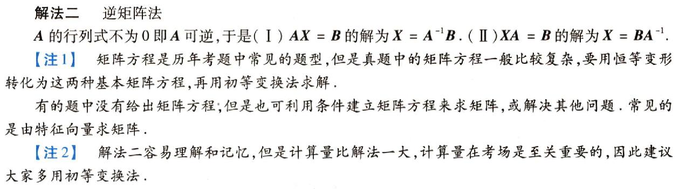
- 解法一就和求逆矩阵是一个东西
可逆矩阵
-
- 补充: 二阶矩阵的逆矩阵：主对调，次换号除以行列式

- 可逆矩阵的作用很重要
- 互为逆矩阵有时候很好用, 相当于交换变换对象和变换矩阵
伴随矩阵
李正元提到甚至证明的矩阵结论
对角与对角之间的乘积
ab^T 是数
-
- 所以遇到题目说某个向量是个非零列向量的时候要条件反射
- 评注其中一个就是秩一矩阵, 秩为0的矩阵只有是0矩阵
ab^T(n阶秩一矩阵的矩阵分解)
-
- 这个YY也证明了(在高阶矩阵计算的秩一矩阵)
- $\beta^T$也是系数向量($k_1, k_2, …, k_n$), 注意是横着的
- 与列向量的线性表示的矩阵分解不一样
伴随等于转置
-
- 产生了对应位置的$A_{ij} = a_{ij}$
- n > 2产生行列式为1
13年真题如果认真做了这个, 就会好做.
-
- 只是多了个负号, 操作都一样
矩阵小操作
- 矩阵相等, 两边可同时取行列式
- 思维的裂缝: 在做恒等变换的时候, 多关注某些部分是一个数(1x1)
-
- 直接令要证明的部分为C, 反解出A来代入原式, 这样就自然而然弄出来了, 和凑导数定义异曲同工
- 处理可逆问题, 可以用$E = AA^{-1}$来构造, 尝试提取公因式
当幂套幂是-1和T, 那么T在里面可以处理掉和的转置(没有和的逆)
- 见第二章习题最后一题
二三阶矩阵快速求逆求伴随(xiehou)
二阶是主对调, 副变号

- 步骤建议第四步改为直接顺序求, 求完转置即可
三次多项式因式分解(xiehou)
-
- 这样两个立方的公式就非常好记了
初等变换(YY)
我觉得YY这里的讲法不太能接受, 比较偏高代的感觉
- 只需要知道左乘是行变换, 右乘是列变换然后把YY提到的注意下自己能否等价理解即可
- 矩阵分解)也可以看作是做了一个构造出来矩阵的变换(右乘)
- 初等变换有些题可以用矩阵分解做, 见李正元270的题型三
基本初等变换
-
- 逆就是自己理解记忆
- 交换就是交换回来
- 乘逆为除
- 加逆为减
- 逆就是自己理解记忆
关于初等变换和初等矩阵一些重要结论
这里的核心思想, 一个矩阵可逆这块就可以分解为若干初等矩阵的乘积
-
- 3的前提是单位矩阵和可逆矩阵是同阶的
-
- 需要记住的两个真命题
- 视频中证明很妙, 可以时不时复习
-
- 需要记住的两个假命题
- 其实就是两个真命题的篡改
矩阵等价, 行等价, 列等价的定义及充要条件
注意区别
这些都记住, 很可能真题会考

- 定义必须牢记, 是很多新题的DFS源点
- 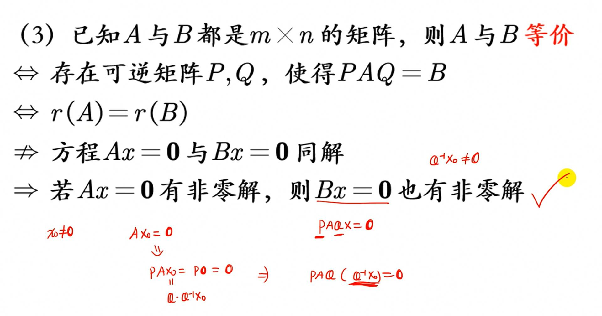
初等变换的应用
初等变换求行列式
-
- 这题也可以矩阵分解
初等变换求逆矩阵
-
- 这里YY一般, 可见李正元, 两种基本矩阵方程(重点))
- 摆在一起, 两者做同样的初等变换
- 解题时, 要抓住要求什么来回忆train
- 记忆方法:
- 左乘了$A^{-1}$就行排列
- 右乘了$A^{-1}$就列排列
- 把有逆的部分变为单位矩阵
-
- 为了解得B, 首先的DFS是去反解B
- 为了反解B, 添加E来构造
- 问题就变成了求某一个部分的逆
观察式子, 可以由[A-2E A]同时做初等行变换得到[E 要求的]
或者也可以这样理解(做了矩阵章节后的理解(殊途同归))
- 同样得到$(A - 2E)B = A$, 这里要求B等价于求$(A - 2E)X = A$的解集X
- 所以用初等变换法
利用初等变换求向量组的秩, 线性关系, 极大无关组
-
- 三秩相等
- 求秩就是化行阶梯形矩阵
- 求线性表示就是化 E|要求的
- 包含主元的列向量组就是极大无关组
这道真题很好, 主要用三秩相等以及用化最简得线性表示的技巧
也很好
这题比较不一样, 需要严肃对待
-
- 需要观察式子来简化
- 列方程组来求得线性表示系数
伴随矩阵的所有相关性质(YY)
-
- 这里再贴一下, 必须全背住
伴随矩阵的秩
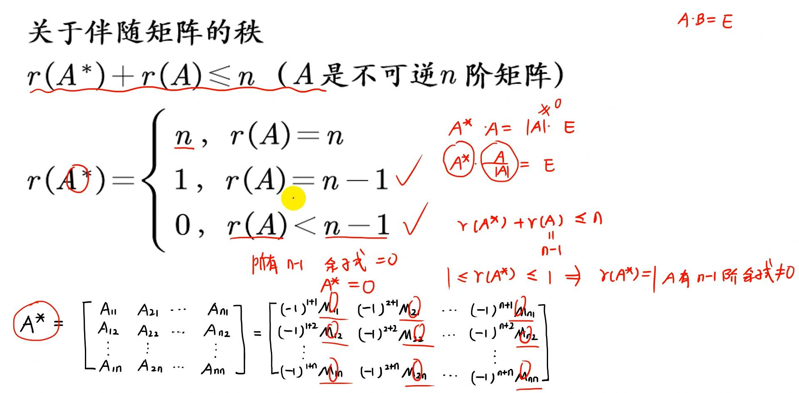
- 补充: 第一个不等式可以由于行列式不为0, $AA^ = |A|E = 0$, 得到$r(A) + r(A^) \leq n$
- 李正元3.46证明了
- 记住, 考试的时候默写在旁边来解题
- 忘记就看对应YY切片证明
- 要对伴随矩阵的秩敏感,
- 同时也表示A满秩, A的伴随也满秩, 有时候可以快速解题
伴随矩阵的特征值和特征向量
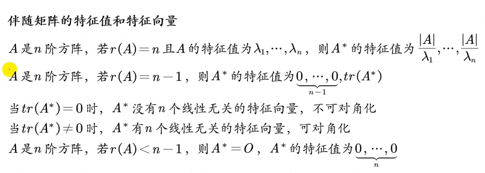
- 着重关注第二条秩一矩阵的性质
伴随矩阵相似及相似对角化
-
- 对应位置是其余位置乘积, a的其余位置是bc
伴随矩阵行列式
对角矩阵的伴随矩阵
分块矩阵的伴随矩阵
TODO: 记忆+完全会自己算
这个地方2023年考过.
YY和李正元2.25讲的一样(说这本书的每个例题, 都可能会成为真题的母体)
- mtx
- 这里求矩阵的逆也可以用广义初等行变化(打洞), 我感觉会比待定系数什么的都要好
- 如果不能变成行阶梯的E(有的矩阵不可逆), 可以变成其转置后再换行
李正元2.16+2.25完美诠释
对应的23真题
方程组A^* = 0 的通解
类似于Ax = 0的基础解系, 先用秩零定理($A^*$则是用其结论)
-
- 好题
伴随矩阵的其他结论
-
- 其实我感觉21年这个主要需要能够用矩阵分解来构造出和
- 然后产生出$A^*x$, 可以现场写.
- 所以这里只需要会推导这个结论即可
矩阵高次计算(YY xiehou)
YY没有讲先求低阶找规律的, 李正元有讲.
DFS
- 优先看是否为秩1矩阵和幂0矩阵
- 二看是否能拆分为单位矩阵+秩1矩阵or单位矩阵+幂0矩阵
- 试探性求低阶(如果是能拆分为单位+秩一还是建议用试探)
- 哈密顿凯莱or通法
- 相似对角化(前提是能相似对角化)
找规律
lzy2.7-2.9
哈密顿凯莱定理
-
- 先得出多项式, 特征变量换为A就等于0了
二三阶求解通法(哈密顿凯勒调整)
感觉如果哈密顿凯莱不好用再用通法比较好
二阶
-
- 先求特征值
- 特征值不等
- 待定n方程$A^n = \lambda_1^nP + \lambda^nQ$
- k为零特征值重数
- 用k建立两个方程组解P, Q
- 特征值相等
- 待定n方程$A^n = \lambda_{1,2}^n(P + nQ)$
- 最终得到A^n从k开始成立
- 之后根据题目进行调整
任意阶
-
- 情形二可用哈密顿凯莱定理证明
- 情形二可用哈密顿凯莱定理证明
DFS
- 先求特征值
- 用不为0的特征秩来待定$A^n$
- 确定方程组下界k为特征值0重数
- 上界为方阵阶数-1
- 求解方程组得到待定的矩阵(P, Q, R …)
- 最终得到A^n从k开始成立
- 之后根据题目进行调整
- 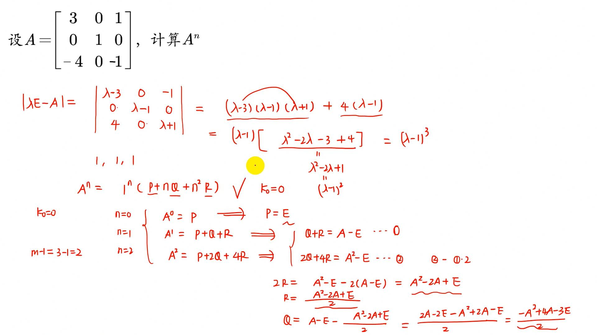
n阶秩一矩阵

李正元在2.5提到两个n维列向量相乘也有这个性质
- 注意只能往前面提才能等价, 这是个细节
- 不太可能直接给, 都是归约, 或者拆分法拆成有秩一矩阵的
- 如果是拆分的, n取k>=1都是成立的
幂零矩阵(特征值全0的高阶矩阵)
这个也很好理解, 特征值全为0说明没有一个向量会在方向上进行伸缩
- 幂零矩阵, n阶, 那么n次以后都是0
拆分法+二项式展开
- 能二项式展开的前提是AB=BA
如果是秩一矩阵还是更推荐找规律找到幂零, 不然特别繁琐
更多见讲义
利用对角化原理
其实对角化的一个现实运用就是用来计算高阶矩阵, 对角矩阵的n次很好计算
- YY进行了证明, 非常好, 同样的证明见mtx
要能相似对角化, 必定得要n个线性无关的特征向量
- 所以条件其实蛮严的
秩一矩阵(YY xiehou)
矩阵高次计算有一部分: n阶秩一矩阵A
-
- 注意这里$A$都是$n$阶矩阵
- 特殊的$\alpha\alpha^T$也是秩一矩阵
- 一在李正元严格证明过(3.42), 二在李正元(3.43证明)
- 二要烂熟于心, tr(A)等于两个向量的内积
-
- 三的证明很重要, 直击本质
- Ax = 0x, 所有非零解都是0这个特征值的特征向量
- 三的证明很重要, 直击本质
-
- 四这个结论也非常重要, 09就考到了
- 当tr(A) = 0, 就都是线性相关的特征向量了
- 反之, 则可以有n个线性无关的特征向量来对角化
- 求矩阵A的特征向量:
- A写成$\alpha\beta^T$
-
- 两个必须要条件反射的特征向量和特征值
-
- 突破口就是看出是秩一矩阵
- 得到特征秩是0…0, tr(A) = 翻转后的内积为1
- 得到A的特征值有0, 行列式=特征值积为零, 不可逆
-
- 要看出来是对称矩阵
- 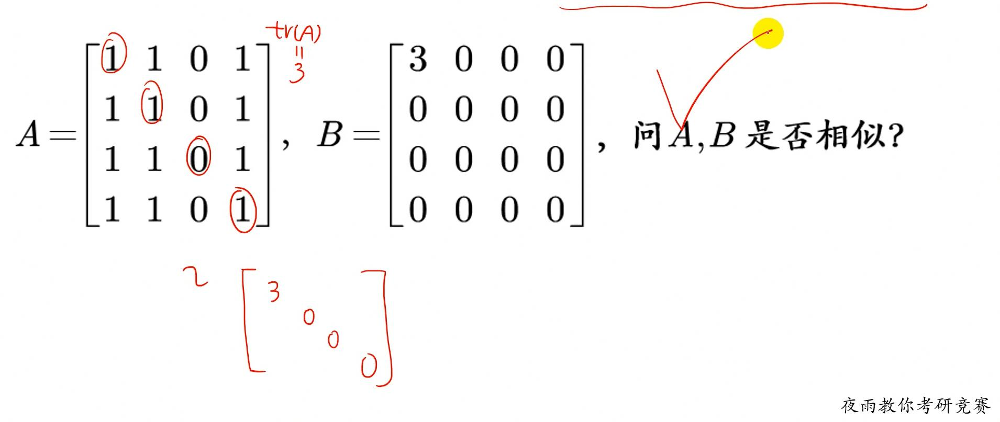
正交矩阵(YY xiehou)
汇总(YY xiehou)
-
- 这些全部都记住
- 再补充一个(真题用的): $AA^T = A^TA = E$这样长等式比较好作为起点
- 然后这个长等式左右两边取行列式, 就是结论一
- 二要熟记并且, $A^*$也是正交矩阵
- 四是做非常规的非常重要的intuition
- 六非常因为是特征值, 所以非常好用
- 七感觉不如xiehou说的

正交矩阵的三个基本性质
正交矩阵列行向量为单位向量

正交矩阵变换不改变向量之间的内积,向量的模长
正交矩阵转置等于伴随(add xiehou)
-
- 这里四个都要会推, 且记住, 考试会考其中的推导过程, 见李正元3.54
- 主要是弄到$AA^T = AA^* = |A|E$, 之后灵活处理
- 还要能会对非零元素行or列进行展开: $|A| = a_{11}A_{11}a_{22}A_{22}a_{33}A_{33} = a_{11}^2 + a_{22}^2 + a_{33}^2 > 0$
- 非零矩阵有时候需要自己来发现
- 又会和前面正交矩阵的性质结合, 比如特征值只有1和-1(由A^TA = E左右取行列式可以马上得到)
李正元3.54也讨论了这个
题型前瞻

题型一 有关乘法定义和规律的题
2.2-2.15极好, 重点是矩阵的幂, 矩阵分解, 等式两边取行列式
上三角矩阵的结论及证明
横竖的乘积是数
-
- 当然这题也要能知道拿两个进行相乘
秩一矩阵的证明和应用
- 2.5见ab^T(n阶秩一矩阵的矩阵分解))
- 2.6就是用了2.5中间的一部, 所以中间的推导都要能滚瓜烂熟
矩阵的幂
拆分法
更多题目见YY
恒等变形后求行列式
见2.11, 不知道为什么放这里, 不是行列式吗…
列向量线性表示的矩阵分解
此题有点东西的, 多刷
-
- 这里p的行列式不用算, 因为两者互逆, 行列式互为倒数(可逆)
更多见2.14, 2.15
题型二 计算逆矩阵和矩阵方程求解
其中第一题是很多题目的基本功(23考过), 必须滚瓜烂熟(证明一次好像就记住流程了)
虽然24就不会考这个了，但是也提醒我别的地方像这样的细节操作必须要滚瓜烂熟
分块矩阵的逆
见2.16
初等变换求矩阵方程
有两种形式, 转置的现推即可, 其中缘由要滚瓜烂熟防止题目大变.
-
- 其余见2.18, 2.19
这题比较复杂有高次幂要求, 补充下步骤
求矩阵而没有给出矩阵方程
-
- 目标是求3阶矩阵A
- 题目给了Ax = 0, 意思是A作用于这两个向量都会为0
- 只要再找出一个列向量被A作用, 产生什么, 就可以得出A了
- 其中各行元素相等要能想到矩阵分解
- 这样就构造了一个A作用于一个向量得到一个向量的式子
- 三个列向量可以构造成一个方阵
- 此时就可以用初等变换来求出A了
题型三 初等矩阵的应用
记住左行右列和缘由, 矩阵分解即基本没问题, 题目见2.22-2.24
题型四 有关伴随矩阵的题
更多方法见伴随矩阵的所有相关性质
其中2.25是自己求了分块矩阵的伴随(需要会分块矩阵的逆), 非常好, YY也带着解了下
分块矩阵的伴随
求解过程应该烂熟于心
伴随和转置
题型五 有关判断矩阵可逆性的题
- 判断可逆, 有很多等价条件(不够)
- 定义法
- $AB = C$, $B$可逆, C也可逆, A就可逆.
- AB = 0 已知A可逆, B一定等于0(B是AX=0的唯一零解)
行列式为0
基本上都是具体矩阵用行列式
Ax = 0只有零解
- 只有各个x都相等为0才有可能全为0
恒等变形,定义法和其他
见2.30, 2.31,2.32
贴下2.33, 有评注
-
- 反解减少思维量
证明两个矩阵都可逆

题型六 恒等式证明和其他论述题
- 见2.35-2.41, 只贴部分
- 在恒等式中, 可逆矩阵会比转置矩阵好处理
-
- 介绍了左右乘可逆矩阵是一个常用的手段
-
- 对称矩阵可以化有T为无T
- 所以先把T弄掉
- 逆的转置等于转置的逆
- 之后就是恒等变形来去逆
2.37会凑目标A+B即可, 答案不是很显然
-
- 4如果c不是0就可以说明
- 5貌似是对的, 但是容易漏掉等式两边都为0的情况, 此时$AB$就不一定等于$BA$
乘积可交换
-
- 有些综合, 第一次写的时候求通解已经忘了, 二刷的时候要流程写掉…
-
- 这题基本都是构造, 我觉得有点hard
- 第二题的解答稍微补充下
- 由于逗号前的话可推出, 如果也和三角矩阵可交换, 那么就可以得到C必定是对角矩阵
- 之后要说明C的对角元素相等又构造了个全1矩阵
向量组的线性无关和秩
向量的基础
一些结论:
- r(A*)
- n, r(A) = n
- 1, r(A) = n - 1
- 0, r(A) < n - 1
前置知识向量空间
-
- 所以一个向量的高度$h$是$R^h$
- 几个线性无关的列向量才是张成的空间, 比如$(1 0 0)^T (0 1 0)^T$张成 $R^3$中的平面
矩阵的行列空间
-
- 只有满秩的时候行列空间才相等(行列向量张成的空间相等)
-
- 而降秩了, 行列空间这个例子就会明显看出不一样
解空间
这是第一个视频开始提出的问题
基和极大无关组
一个空间的基要能张成这个空间
- 所以一个基需要满足:
- 线性无关, 不然会很罗嗦
- 个数与空间维度相等($R^n$), 少了不能张成这个空间, 多了就线性相关了
会发现极大无关组和基很像
- 区别
- 基是相对于向量空间的(基是无限的)
- 极大无关组是对于向量组的(而向量组个数是有限的)
- 某种意义上是一个东西
初等行变化的两个结论
- 初等行变化
- 不改变矩阵行空间的结构(可能会改变列空间的结构)
- 不改变列向量的相关性
- 但是需要注意如果要找极大无关组, 需要找没有变之前的, 因为行变化会改变列空间的结构
- 注意这里的相关性意思是(不同于整个向量组是否线性相关的概念):
- 比如第一行和第二行无关，和第三行相关。那么调换第二三行，其行向量之间的线性关系就发生变化了。
- 除了这俩别的无法保证
- 列变化同理反之(因为用的比较少)
向量的知识总结
线性表示
- 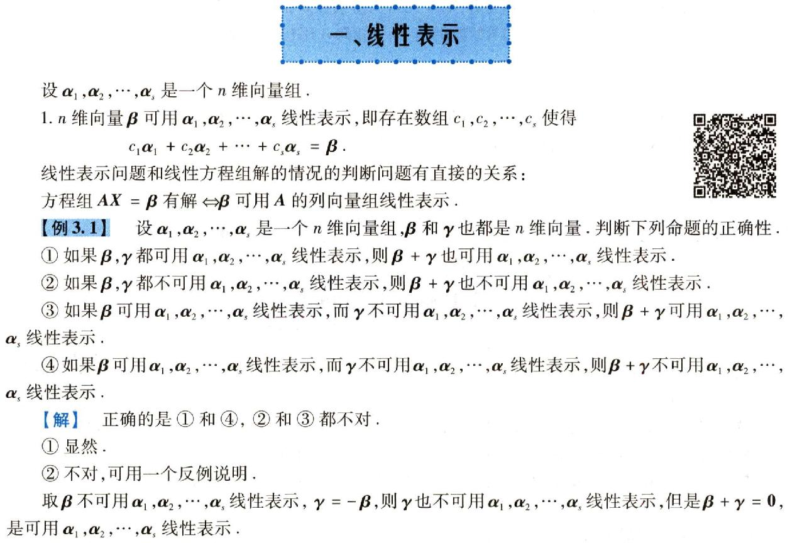
-
- 这里的证明方法和YY差不多, 好强
向量组的线性相关性
-
- 新发现可以用矩阵分解来理解线性表示与矩阵方程组解的等价关系
- 说明李正元前两章极好
向量组的秩和最大无关组

- 注意唯一线性表示还要满足向量组的秩等于向量组个数
-
- 向量组等价即三秩相等
- 评注无敌, 解题利器
- 不能用列变换的原因见初等行变化的两个结论
矩阵的秩(矩阵等价和向量组等价)
补充一个
- 6是列满秩左乘不改变秩, 行满秩右乘不改变秩
- 7 见AB=0的秩不等式
- 7同时方师兄也证明:
- AX=0, AB =0, 所以B是解空间
- r(B)就是解空间的秩
- 未知数个数(A的列数) = r(A) + r(B)(秩零定理)
- 如果B里刚好就是这个齐次线性方程组的基础解系的话(或者说是解空间的基)
- 那么就取到等号, 否则就是小于(r(A) + r(B) <= n)
- 非方阵矩阵的秩不等式要能主动构造
- 6是列满秩左乘不改变秩, 行满秩右乘不改变秩
- 需要注意 具体矩阵不要忘记子式的check, 可以快速定秩的下界
- 上界通常可以用行列式

矩阵等价和向量组等价
矩阵等价主要是通过初等行变换, 而初等变化肯定不改变形状, 所以要满足同型矩阵
- 向量组等价不要求同型
- 矩阵等价经过了行列变换以后, 因为行变化会改变列空间结构, 列变化会改变行空间结构, 那么空间其实已经完全变了, 只有秩没变了.
- 向量组等价的重要特征是张的是同一个空间, 所以要能互相线性表示, 也就是保留了空间结构
- 综上, 向量组等价是更强的命题, 多一个相互线性表示的要求
实向量的内积和正交矩阵
-
- 在证明同解的时候创造$\alpha^T\beta$为内积是非常重要的手段
- 需要注意, 几个向量两两正交几何上是相互垂直, 但是还包括0向量乘以某个向量=0向量也是正交的情况.
- 需要注意两个向量乘积为0要能联系到正交的性质
- 比如在 $A$以行向量分块 $A\beta = 0$说明每个行向量都与$\beta$正交, 乘积为$0$
向量的小操作
- A可逆, 可看作一系列初等矩阵的乘积
- 如果没有告知是什么形状的矩阵, 就设为mxn和nxs(统一)
- $\alpha, \beta$都是列向量, 那么$\alpha^T \beta$, $\beta^T\alpha$都是内积
- 要能看出来是内积, 为一个数, 方便恒等变形
- 要能经常主动放缩创造条件, 甚至经常成为题目突破口
- $r(A\alpha) \leq r(\alpha)$
- 要能主动构造秩的上界
- $r(\alpha_1, \alpha_2,…,\alpha_m) \leq m$
李正元提到甚至证明的向量结论
行列向量组等价,子空间秩
-
- 这里的重要思维就是把其中一个矩阵看作系数矩阵来做线性组合
- 然后列向量组等价则其生成子空间就相等, 同时子空间一样秩也就相等
线性表示
多由少表
求向量组的秩和最大无关组
3.11神题
由这个题想明白了很多结论
由此这个题目要的充分必要条件的强度只要秩相等即可
- 所以D这个强度就够了
- 串联一下ABCD
- A是说$\beta$所张成的空间包括了$\alpha$张成的空间, $r(\alpha)$ <= $r(\beta)$
- B是说$\alpha$所张成的空间包括了$\beta$张成的空间, $r(\beta)$ <= $r(\alpha)$
- C是说两者张成的空间相等, 当然秩也就相等
- D是说两者的形态相同, 且秩相同, 不要求张成空间相同(这里就是不讨论空间性了)
- 这题也启示了, 当一切都杂乱不堪的时候, 全部都等价为秩的条件, 会架起桥梁.
- 树莓方师兄, 这题讲的很好
行列式来求矩阵的秩
线性相关性上(YY)
汇总
维数
-
- 记住比较好, 现推很慢
- 或者用等价意义去记
- 原来无关说明右边分量每个都无法被表示, 延长了, 还是会有没有被表示的
- 原来相关, 说明每个分量都被表示, 少一个, 还是每个分量都被表述

- 这是个特殊例子, 一定要记住
整体与部分
乘A(mxn)矩阵
-
- 注意这里的A又是mxn的, 只要n是和列向量维度一样即可
- 只用记住线性相关乘A也线性相关, 无关可以由逆否得到
- 左乘列满秩矩阵就不会减少秩, 所以能互推
- lzy3.29也讲了这个
- 要完全会lzy的这个操作(非常好)
线性相关性与秩,方程组的解,行列式之间的关系
完全都可以用几何记忆
-
- 只要能记住有这样分解(矩阵分解真的重要)
- $[a_1, a_2, … , a_m] = A$
这道93年真题极好
04真题
-
- 矩阵的解法
-
- 方程组的解法
-
- D的证明方法必须会
线性相关性与线性表示之间的联系
-
- 几何去记忆比较好
老题就送分了, 选项就是结论.
同个数等价向量组形象相关性一致
用来解决两个向量组之间的线性相关性的题.
就是看两边能不能互相线性表示
-
- 证明很好, 但平常感性地记住
- 可以由另一个同个数的向量组表示, 等价于右乘了个系数矩阵
- 所以不改变线性无关的性质
-
- 等价就是可以互相表示, 用上面的证明即可.
加入一个向量
-
- 其实知道几何意义就行了, 这个结论显然
线性相关性下(YY)
线性相关性的证明或定义(重点)
推论一
- 线性表示的矩阵分解
- 在这里看作是B是列满秩, 左乘系数矩阵得到的矩阵秩不变
- 反之如果矩阵分解为翻转形态的, 行满秩右乘也不改变系数矩阵的秩
- 左乘列满秩矩阵直观解释(见3b1b的矩阵乘法的几何意义):
- 右边矩阵B看成是一列列的列向量，左边A是矩阵映射，A列满秩，所以B的每一列经过A的线性映射过后，在A的列向量空间里面对应唯一的一个向量。不可能B的两个线性无关的向量经过A还可以映射到“同一条直线”上，因为A这个线性映射并没有压缩空间。
- 右乘行满秩矩阵同理
97真题
14真题
98真题
推论二
利用线性相关和线性无关的定义
94真题
-
- YY讲了三个方法
- 其实看这个方程组直接是非满秩的行列式就为0了.
01真题
这种就是肯定要用定义写的, 李正元3.33, 3.34 3.35是一系列题
线性表示(YY, xiehou)
汇总
维数
-
- 几何去理解比较好
整体与部分
传递性
-
- 看能够被另外一坨线性表出就是看这两坨是不是等价
- 等价就是看能否互相线性表出
线性表示与向量组的秩之间的联系1
-
- 几何记忆即可
- 注意是可以互推的
-
- 也就获得了这个常用不等式
同时下面的题目可以获得这样的不等式
-
- 这里是对分块矩阵做秩的放缩得到的
- 如果给了如题条件, 那么这三个秩相等
-
95年真题
反证法
-
- 这题很好, 第一次感受到如何使用秩的放缩
同样非常好的题
线性表示与向量组的秩之间的联系2
两个推论
-
- 这里显然是看线性表示和秩之间的关系
-
- 这个得要看出来D的各个列向量相加为0, 所以有不全为0的k…, 线性相关
- 秩 < m
- 等式右边如果线性无关则等式不成立
线性表示与方程组解之间的关系
矩阵分解
-
- 首先注意组成的矩阵是nxn的
- 几何上可以直接理解为$a_{i}$已经可以张成的空间包括了任意的n维列向量, 所以都可以被表出且唯一表出.
-
- 因为这里显然用矩阵分解, 所以这里用线性方程组的思维来做
- 显然可以找到$P^{-1}x_0$这样的解满足方程
多由少表多的相关
-
- 直接用张成空间理解即可
- $\alpha_i$张成的空间包括了所有$\beta_j$, 而j多于i, 必定有多余的, 所以线性相关
- 第二条, 如果$\beta_j$线性无关了, 那么肯定会少于等于i
-
- 秒杀
向量组等价(张成空间相等)
- 向量空间的角度: 向量组张成空间相同
- 线性方程组的角度: 两个线性方程组共用一套基础解析, 解空间相同, 同解(这在解决线性方程同解问题很好用)
线性表示的角度: 两个向量组可以互相线性表示
-
- 向量是n维列向量, 组成A和B矩阵的时候是作为矩阵的每一行, 这里要注意.

- 向量组等价的解释(线代及其应用)
- 也就是解空间相同(AX = 0和BX = 0同解, 同一基础解析, r(X_1) = r(X_2))
- 这是不确保同型的结论
- 等价, 行三秩相等
- 做题应该往这几个结论进行归约
- 或者其实可以都往秩归约, 然后往其他归约
同型矩阵:
-
- 行等价P是左乘
- 同解可以证明$r(AA^T) = r(A)$
- 李正元3.49
-
- 很好的练习题
-
- B可逆, 右乘列变换, 列向量组等价
- 考场上可秒选
-
- 题干的条件转化为$AC$列等价(右乘可逆矩阵, 做了列变换)
- 注意同解需要的是两个系数矩阵的每行等价, 2的每行是列向量转置以后的, 满足等价, 而(1)(3)每行并不等价, 所以不能被推出
利用初等变换求向量组的秩,线性关系,极大无关组
19真题, 线性表示的好例子(不过yy第二个写错了)
99真题, 也是好题

06真题, 比较反常
23年线性表示
几何上的意思就是两组两个向量张成的平面相交的那个向量是多少
- 首先不可能是重合平面因为两组明显张成平面不一样, 齐次答案只是一个方向上的向量
- 所以这个交向量垂直于两者法向量
- 所以用三次求法向量即可
- 这样完全不用脑, 非常暴力
- 代数上直接设四个变量来得出线性表示的等式, 然后移到一边转化为解方程的问题, 四个系数就是这个方程组的解
- 法三线性表示快速看秩, 多尝试去凑减法, 所以可以直接看出D可以被$3\alpha_1 - \alpha_2$, 和$\beta_1 - beta_2$表示, 瞬间ok
- 说明线性表示相当重要
秩的等式与不等式(YY xiehou)
汇总

TODO: 对以下进行汇总
- 不要忘了秩的另一个定义: 如果A有一个不为零的r阶子式D, 且所有的r+1子式(如果存在的话)全部等于0, 那么数r称为矩阵A的秩=r(A)
- 走着走着就忘了初心是不可取的
- 矩阵秩的天然不等式: 小于其行或列数
矩阵的秩等于转置的秩
-
- 证明
- 0的不等式
- 必须要记住, 应用非常多
-
- 同样超级常用
- 记住推导过程比较好, $r(A, B) \rightarrow r(A + B, B)$ (1倍的B加到A上)
- 多B肯定秩会比$r(A + B)$更多
- xh给了个非常nb的证明
- 也可以反过来, r(A + B) to r(A+B, B) <= r(A, B)
- 又分块矩阵, 排列起来, 如果A和B块也线性无关那么最大就是$r(A) + r(B)$
-
- 经典的筛子不等式
- 常用来放缩
-
- from 线性表示与向量组的秩之间的联系1
- 常用来放缩
- A为实矩阵, $r(AA^T) = r(A)$
- 李正元3.49
矩阵的秩转化为向量组的秩

- 注意横着放则转化为列向量组, 竖着放就转化为行向量组
-
- 常用的不等式(由上面两个结论推的)
- 李正元3.43, 3.44证明了
- 记住推导过程比较好, $r(A, B) \rightarrow r(A + B, B)$ (1倍的B加到A上)
- 多B肯定秩会比$r(A + B)$更多
-
- 经典的筛子不等式
结论一练习题
主要就是$r(A) = r(\alpha_1, \alpha_2, …, \alpha_m$)这个小操作
结论二练习题同时证明了常用不等式
-
- 如果要说明一个矩阵的秩, 中间要引入一个极大无关组
其余题看YY, 都很好
初等变换不改变秩
-
- 这里又证明了常用不等式
初等变换之阶梯形矩阵(分块矩阵的秩)
-
- 这里的分块相当精细
- 这里只要知道过程中C被割舍了, 所以秩要么不变要么减少
-
- 要注意A是原矩阵, 然后乘以一些初等矩阵
- YY把这些都证明了一遍
初等变换之矩阵的标准形
广义消法变换(打洞)(舒尔公式)
21真题
22真题
-
- 同解就是解空间相同, 直接归约到三秩相等是不错的选择(由$r(X_1) = r(X_2)$和$n - r(A) = X$推得)
- AB归约到秩是很显然的
- 同解也有行三秩相等可以归约向量组等价(张成空间相等))
- 本题还可用方程组角度解:
23真题
分块矩阵的秩(xiehou 最近考研重点)
- 初等变换之阶梯形矩阵(分块矩阵的秩))
- 广义消法变换(打洞)(舒尔公式)(舒尔公式))
18真题
-
- 也可以用矩阵张成列空间来解, 比如A选项, AB表示B中的列向量被A变换到A的列空间中, 绝对都被A包含, 所以必定等于r(A)
21真题
- 数一

23真题
-
- 和YY差不多
线性方程组理论处理矩阵秩之基础解系个数(同解)
-
- 第一个长充分条件, 如果想要证明两个矩阵的秩相等, 可以用去证明$Ax = 0 and Bx = 0$同解
- 第二个结论需要注意, 要满足线性无关的s个解向量
- 解空间里最多有n - r(A)个线性无关的解向量
- $s$又是$Ax = 0$的解, 所以$s \leq n - r(A)$
- 两个矩阵线性方程同解可用来证明$r(AA^T) = r(A)$
- 李正元3.49
同解证秩相等
-
- 需要注意例2经常作为归约
- 例2中只能是$r(AB) = r(B)$这种B左边多个A
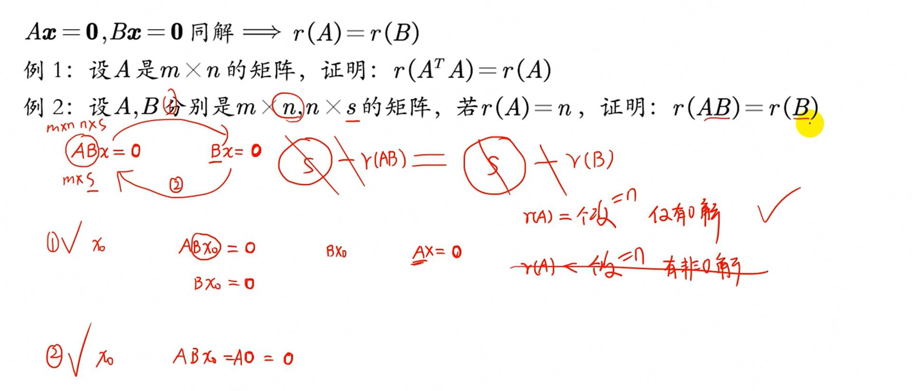
AB=0的秩不等式
-
- 主要的思想是能切入秩
- 也要能让B表现为列向量组
- 转化为方程组的解
- YY秩的不等式1:25:18证明了
- 要用线性方程组的视角和秩零定理
- AB=0, B的列向量为方程AX=0的解
- 设t个为最大无关组的列向量个数, Ax=0最多n - r(A)个线性无关的解(秩零定理)
- $r(B) = t \leq n - r(A)$
- 所以就得到了$r(A) + r(B) \leq n$
-
- 同时也证明了
线性方程组理论处理矩阵秩之方程是否有解
- 增广矩阵的秩
-
- 没有太多展开
- 后面还有两题, 没啥展开
可对角化矩阵(实对称矩阵可对角化)的秩
- 做题很常见, 这样A可以用P(特征向量组成)对角化为对角矩阵, 然后因为对角元素都是特征值, 所以看非零特征值即可
具体矩阵的秩(提醒)
- 需要注意 具体矩阵不要忘记子式的check, 可以快速定秩的下界
- 上界通常可以用行列式
- 最后再用初等行列变换
向量的题型前瞻
题型一 概念检测题
3.6-3.13做多刷即可
向量空间的向量线性关系
- 3.6, 3.7, 3.8, 3.9, 3.10
- 3.9神题
- B选项的任何向量一定要表示为张成空间的线性表示的意思, 秩就是$r(\beta_1..\beta_t)$
- C用向量空间解释
- r = s, 如果s<n，那么只是说明从$R^n$中选了小于n个线性无关的向量, 无法成为基, 绝对有n维向量不可被表示.
- D最快的是用逆否命题(真的无敌)
- 都是非常好的题, 和秩不等式一起结合来考
3.11神T
- 整理在别的地方了
- 由这个题想明白了很多结论
非方阵的矩阵秩的讨论
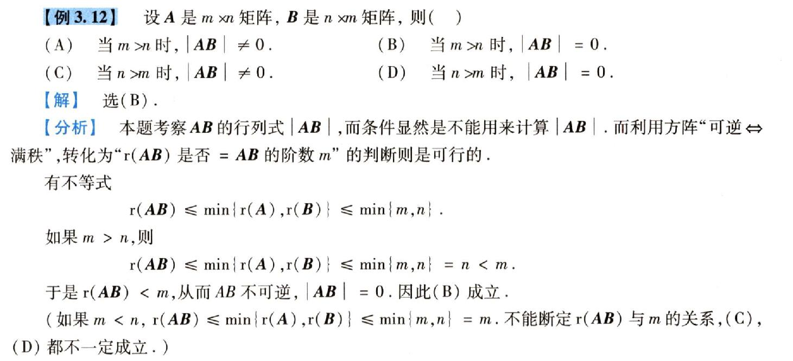
- 这种通常要主动分m > n等情况
- 抽象函数显然行列式无法直接计算, 转化为秩
- 利用上筛子不等式, 非方阵秩不等式讨论即可
3.13同类题
题型二 求向量组的秩和最大无关组(重点)
- 3.14是经典题, 烂熟于心
题型三 求矩阵的秩
- 3.17
- 3.19
3.20, 3.21都挺巧的.
题型四 判断线性表示
具体向量可构造矩阵做初等行变化化为最简行阶梯矩阵定理这里的3.7
- 3.22, 3.23, 3.24
抽象向量可用这里的3.6， 3.7, 3.8和秩的等式与不等式(YY xiehou))
-
- 3.25巨好, 基本是这里的向量线性无关和线性相关的巅峰
- 方讲的也巨好
题型五 判断线性相关性
- 用秩
- 用定义
- 用向量组的线性相关性定理3.2
- 看新加的变量是否可以被线性表示
初等行变化
3.26, 27行变化
秩的不等式
04真题
-
- YY在线性无关上也讲了

-
- 乘A(mxn)矩阵矩阵)
- 3.29
- 用秩和秩的不等式会让事情变得很简单
- 不严谨的方法也可以是, 这里A不知道是不是可逆矩阵
- 所以如果本身就是线性相关的, 无论怎么用A变换都是线性相关的.
定义法or反证法
定义法比较好的例子
-
- 首先这题没有线性表示关系, 所以无法矩阵分解
- 这个不要看解答, 用定义法比较好, 也更通用
- 见方
- 这题直接乘A我觉得也没啥问题

YY也讲了这类题 线性相关性下 52:10, 但是没有进行深入
这题方师兄讲的很好

- 主要说明方法二, 用的是每个向量能够被其他向量线性表示来证明:
- $\alpha_1 … \alpha_{i-1}$都是$A^{i-1}X=0$的解, 说明这些向量都落在null space里
- 或者说这个解空间是$\alpha_1 … \alpha_{i-1}$张成的
- 而$\alpha_i$则不是这个线性方程组的解, 所以不落在null space里, 所以不会被线性表示
后面还有相关例题是用来归约到这个母题上的.
- 3.35是98年真题
矩阵分解
评注就是这类题的主要解题DFS

3.37可以不用每个选项做矩阵分解, 可以先肉眼分析
3.38, 3.39都很好, 3.40有点hard
题型六 其他证明题(一些重点结论的证明)
感觉都是YY都证明过的, 而且都不是会直接考的, 而是会用来做题的一些比较好用的结论.
3.41是证明了一个经典结论, 结论很重要.
3.42是可表示为$\alpha\beta^T$的证明
3.43的例题也是证明阵秩一矩阵(YY-xiehou))的结论
3.44, 是秩的等式与不等式的一些证明
3.45用了AB=0的不等式以及3.44的对偶不等式
3.46是伴随矩阵秩的经典结论
3.47答案有点迷, 方师兄讲的很好
-
- 主要使用线性表示和线性相关无关之间的关系, 这个李正元大力推崇
题型七 内积和正交矩阵
- 3.48是一个形态的东西, 只要知道当A列分块, $A^TA$是对角矩阵也就是$\alpha_1, …., \alpha_n$两两正交是等价的
- 且对角元素为$||\alpha_i^2||$
- 3.49经典的用同解来证明秩相等)
3.50用到3.48和3.49的结论比较好写, 然后本身是一个比较显然的结论, 空间中两两正交, 必定就是线性无关的
3.51是用定义去证明, 需要去构造正交向量相称用上正交这个条件.
- 3.51的例题2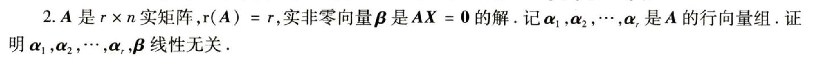
-
- 用向量空间解比较好
3.52用了正交矩阵的正交矩阵每列单位矩阵的性质
- 3.53就是证明了YY讲的正交矩阵变换不改变向量之间的内积,向量的模长
- 3.54的对i行展开来确定|A|的值大于0很妙, 这也是常用的两种切入角度的其中一个, 这题是正交矩阵转置等于伴随
向量习题记录
-
- 做了一定题以后觉得理解为解空间一致比较好写题
- 解空间一致, 并不能表示其线性相关和不相关, 两者一个线性相关一个线性不相关, 但是秩相等了, 解空间也相等.
-
- 这题本身没什么, 注很强.
-
- 这题要证明两个秩相等, 但是不好直接用同解
- 归约到r(AB) = r(B), 之后就是常规操作了
线性方程组
线性方程组的基础
- 抽象型线性方程组
- 对于证明那种各种系数*某个列向
- 矩阵乘法的列观点：$t = a_1 + 2a_2 + 3a_3 + 4a_4$ = $(a_1, a_2, a_3, a_4) * (1, 2, 3, 4)^T$
- 要线性无关，可用满秩来解， 满秩 <=> r(AB) = r(A) 当B满秩
- 对于证明那种各种系数*某个列向
常用结论汇总
线性方程组的重要思维
- 非齐次线性方程组解的题目一定要先判断有无解(增广矩阵)再判断有多少解(是否满秩)
- 齐次线性方程组的题目则判断是否是否唯一解(满秩)
线性方程组的知识总结
解的个数的几何观点
more see mtx

线性方程组的形式
-
- 两种形式灵活使用
线性方程组解的情况的判断
补充: $A$为m x n
线性方程组的通解
-
- 定义4.1需要注意, 看到基础解系, 一定要知道它是Ax=0解空间的基向量
- 所以下面的向量是AX=0的解, 一定可以被这个解空间的基线性表示
- AX=0的通解也就是解空间基向量的线性表示
- 通解就是解空间中任意一个向量
- 判别基础解系
- 通常先用秩零定理得到解空间的基向量个数(基础解系的个数)
- 那就只要找s个线性无关的解, 就得到了基向量(基础解系)
这个经典推论的又一证明
-
- 这里的拆分方法就是对B拆为s个列向量
- 等于在刚好B的列向量是AX=0解的基础解系
- 小于则不是刚好
-
- 定理4.3和4.5要区分清楚, 本质是解的叠加原理
- 定理4.5(不清楚几何意义, 暂时理解为这样才满足叠加原理, 而且起码是要有约束的线性组合)
- 定理4.7和YY讲的本质是一样的
- 定义4.1需要注意, 看到基础解系, 一定要知道它是Ax=0解空间的基向量
线性方程组小操作
给了数字的矩阵确定秩的下界可以用非零子式不等于0得到, 比如:
秩为n, 所有三阶子式为0, 这来处理非方阵极其技巧性.
- 见4.17(2)
李正元提到甚至证明的线性方程组结论
公共解在向量空间的意义
-
- 公共解强调公共, 区别于同解
- 公共解没有什么确定性的结论
齐次线性方程组求解原理(YY)
Main
-
- 转化为为这个方程组的解即可
-
- 主元就是非自由变量
- 其他就是自由变量
- 随便取s, t, 最终可以得到两个基础解系(解空间基向量)
- 快捷得到基础解系(写题就是通常横着给向量赋值01, 10)
- 让自由变量(非主元变量直接取数)
为什么不能做列变换
-
- 显然是不行的
自由和非自由是相对的
齐次线性方程组解的形式(YY)
两个性质

- 具体细节见视频
非齐次线性方程组解的形式(YY)

- 如果告知非齐次方程组有n个线性无关的解, 那么对应的齐次方程解就有n-1个线性无关的解
- 细节见视频
含有未知参数的方程及反解方程(YY)
未知参数不可求(讨论参数)
注意这里的YY的讨论方法很好, 多看这个视频学过来
- 解的情况就看r(A)和r(A|b), 所以要用初等行变换化为阶梯形比较好得到秩
- 不等就无解
- 等再分
- 等于n, 则唯一
- 不等于n则无穷
讨论
- 先r(A), 后看是否会被b列影响
- 会影响再进一步讨论r(A|b)
未知参数可求
三个结论
-
- 结论一
- 一定要转化为$r(A) = r(A|b) < n$, n为变量个数, 然后用行列式可以来求出未知数
- 结论二
- 一定要注意是线性无关的解, 这样就是解空间的基个数, 减1就是零空间的基个数
- 结论三
- 如果能使用上解的叠加原理, 题目一般会简单(李正元4.21)
- 可用于构造不含参数的解
- 可由非齐次方程组的解直接得到对应齐次方程组的解(李正元4.19例二)
- 结论一
-
- 这个参数非常多
- 通过构造不含参数的解, 就可以分别代入三个方程得到未知参数
矩阵方程的求解
本质就是矩阵乘法
-
- 其中与主元乘在一起的变量就是非自由变量
已知通解反求方程组
这块内容不如李正元的题型五-1 反求齐次线性方程组问题
本质还是解方程
-
- 这里的通过秩零定理得到的$r(A)$后可得到行数大于$r(A)$
- 实际上只需要取$r(A)$行就够了
- 设出来后把基础解系代入以后就得到了关于a的方程组
- 常规解这个方程组即可
更简单的方法
方程组的公共解问题(YY的公共解非常一般)
TODO: 没有全写
方程组同解问题(解空间相等, X_1和X_2列向量组等价(lzy,YY,fsx)
- 向量组等价(张成空间相等))
- 同解问题都先转化为三秩相等会是比较通用的处理方式
- 需要注意这里都是充要条件, 同解和行空间相同是充要的
- 三秩相等
- 首先是基础解系个数相同, 所以$r(A) = r(B)$
- 齐次解空间相同, 所以$\dfrac{A}{B}$竖着摆放的秩相同(有A的行向量会被B的行向量线性表示)
- 举个例子: $\alpha_1\alpha_2$张成的平面和$\beta_1 \beta_2$张成的空间是同一个
- 同解就是解空间相等, 于是可推出$r(X_1) = r(X_2)$
- 行空间相等, r(A) = r(B), 行向量组等价
-
- 注意只有两秩相等显然不能得到同解
同解归约的两个常用结论
-
- 结论一
- 同解就是解空间相等, 于是$r(X_1) = r(X_2)$
- 根据秩零定理$n - r(A) = r(X_1), n - r(B) = r(X_2)$, 所以基础解析的个数是相同的
- 可以得到两个列数相同的矩阵AB, $r(A) = r(B)$
- 结论二就是李正元4.27的方法二
- 我觉得从方程组角度好理解, 等号左边是满足A的解, 右边是既满足A又满足B的解
- 结论一
-
- 用的向量组等价
抽象线性方程组合集(在真题中所有的考法, 前面的一些东西也汇总了)
-
- 四五也考过但是少
确定方程Ax=0及Ax=b解的情况
例题:
-
- 归约到秩的问题
- 法一用线性方程组的知识
- 法二用秩不等式(筛子不等式放大, 增广不等式放小, 夹逼)

- 简单题
-
- 这里的思路是讨论m和n来进行秩不等式的放缩
-
- AB因为没法判断和未知量的个数的关系, 所以无法得到
- CD就看系数矩阵和未知量个数(n+1)之间的关系, 显然系数矩阵等于$r(A)$, 永远小于n, 所以一定有非零解
-
- 要能看出分块矩阵的转置
-
- B推不出来, 其余都用天然不等式和筛子不等式即可
-
- 就是要得到$r(B) r(B \beta) n-m$之间的关系
- AB=0可以得到很多性质
- 把能得到的信息都摆出来, 相互推导就能解决这题
- 关键点是B的列向量是解空间的基, 此题就没问题了
求方程Ax=0及Ax=b的通解
-
- 特别的结论在李正元知识总结里有其证明了
例题:
-
- 先得到无关解个数, r(A)容易得到为2
- 矩阵分解得到A * 系数矩阵, 得到了一个线性无关的解
解向量的个数为1
- 凑矩阵分解即可马上得到一个解向量
做初等列变换
- 这真题非常好
同类型02年(下一题, 一样, 不贴)
-
- 矩阵分解YYDS, 检查一坨向量是不是线性无关的, 用矩阵分解是很好的
这个题YY的思路很棒
-
- 这个题YY用了大题讲
- 选择题会简单, 可以拿选项去试是否各自是齐次的解和非齐次的解
A*=0的通解
这里YY都把结论总结好了
-
- 需要条件反射出$AA^ = A^A = |A|E$, 来进行操作
- 需要条件反射出$A$的列向量是$A^*$的解(当A不可逆的时候, |A| = 0)
- 需要注意当r(A)=0的时候说明A也是0矩阵
- 注意如果给了r(A*)也是可以反推r(A)的
例题:
-
- 这个解感觉是比较好的, YY的解法比较突兀
-
- 比较简单
- 会上一题这题就会
-
- 这题很好, 非常综合
证明Ax=0和Bx=0同解
-
- 第二个思路就是解空间一样
例题:
-
- 1的证明必须会
-
- 这也是经典的结论, 左乘列满秩不改变解
22真题, 有难度的题
- 用行向量组等价的三秩相等比较好做, 用思路一非常难做感觉
Ax=0与PAx=0, APx=0
-
- 冷门, 但是变化不大, 知道即可
- 主要是凑$E = BB^{-1}$(B可逆的情况下成立)
- 判断是不是非零解用反证法比较好
-
- 首先要能矩阵分解出相当于右乘了个P矩阵(系数矩阵)
- 这样就能直接插D的心脏
公共解(抽象线性方程没考过)
一般是放在大题计算
线性方程组的几何意义(貌似数二不出)
Ax=0和A^TA=0同解(很重要的母结论)
- 李正元3.49
- 可推出A和A^TA行向量等价
推出r(A) = r(A^TA) = r
同理, A^Tx=0和AA^T=0也是同解, 也有相对应的结论
线性方程组的题型前瞻
都在各自不同题型前提到
题型一 概念检测题
- 抽象线性方程组合集(在真题中所有的考法, 前面的一些东西也汇总了))
- 全部题都很好, 第一次写的时候都不能吃透, 二刷要搞透彻.
- 方师兄讲得比较好, 选择全看
- 4.1用解空间来解同解和互解比较好(看YY的证明我愣是没看懂缘由, 太不显然了, 还是用向量空间好理解)
- 4.2好题, 要讨论mxn的形状的题, 同时也是行满秩一定有解的经典结论
- 4.3也可以计算了, 看是不是和答案成比例
- 4.4
- 4.5 就是强调个数问题
- 4.6 用伴随矩阵的秩和$AA^*$还用了解的线性组合, 极好, 可以看方
- 4.7 极好, 这题就更不好用计算了, 显然是要概念来排除, 看答案即可
- 4.8 出现不知道是否是无关的情况, 神奇
- 4.9,4.10都考察了$AX=\beta$的一些性质和结论, 自己掌握得不好…
题型二 求通解
- 第一步永远是得到零空间的基向量个数(齐次方程的基础解析个数)
- 时刻知道自己在做什么
- 求通解(解空间)用mtx的方法最好
- 求基础解系就是求解空间的的基
- 求通解就是用基础解析张成的解空间
- 基础解析是由初等行变化得到的, 原理
注意李正元的计算过程, 我们做初等行变化的时候用的符号变成B和gama, 得到的方程组叫同解方程组

- 4.11, 4.12就是求齐次和非齐次解的标准
- 4.13 注意存在两个不同的解不一定是线性无关的
- 4.14 因为倍加的初等变化不改变行列式的值(注意不能倍乘和交换), 所以两个题合起来做明显计算量小
- 4.15 法2可用行列式<0得到a, 然后同答案进行讨论
- 4.16 告知了一个非齐特, 求出齐通的基础解系, 又增加一个约束条件来求解.
- 4.17需要用到三个结论的结论2俩求未知参数(虽然这题本身就告诉我们要求, 但是有些题目不会告知能求, 要自己知道能求)
- 4.18有部分参数能求, 有部分参数不能求, 需要进行讨论
- 4.19 (2) 极好
- 4.20极好
- 做了19就知道可以先用秩零定理来得到零空间的基个数
- 因为非齐次方程的系数矩阵秩已知, 减去1就是对应齐次方程系数矩阵的秩
- 解是4维(未知量个数是4, 解空间的维度$R^4$)
- 再用解的叠加原理构造基.
- 做了19就知道可以先用秩零定理来得到零空间的基个数
- 4.21 用了叠加原理life will easier.
- 4.21的相关例题很技巧, 通过将题干给的非齐次转化为了齐次, 然后去凑
- 见方
- 4.22hard不会写…
- 首先题干信息没挖掘出来, AB=0要得到秩, B的列向量是解
- 其中一个也很难想到
题型三 有关两个方程组的公共解的问题(21年后非重点)
公共解DFS汇总
-
- from 方, 视频末尾, 极好
题型三-1 一基础解系一方程组
DFS
- 用基础解系张成空间, 转化为解的列向量形式$(x_1, x_2, x_3, x_4)^T$(带参数系数)
- 方程组作为约束条件
- 把$x_i$分别代入方程组得到关于参数系数的方程组, 解得约束关系等式
- 将约束关系式代入基础解析的张成空间进行约束
4.23 的思路二很好, 一个基础解系和一个是方程组的情况下, 让基础解系张成的空间满足方程组这个约束条件就是公共解
- 4.26 的方法二极其可怕, 非常神奇, 逻辑非常hard但是计算量巨小.
- 方法一三比较常用, 看题目的情况使用.
题型三-2 双基础解系
- DFS(old, 理解不够深入)
- 用更大的解空间的基来线性表示小的解空间的基(如果一样就随便)
- 转化为增广矩阵的秩的问题
- 解出的未知数代入更小解空间(公共解肯定是更小的空间)
- DFS1(new, 我更喜欢这种, 而且这种解非齐次移项后也是一样的操作)
- 直接相互线性表示$k_1\xi_1 + k_2\xi_2 + k_3\xi_2 = c_1\eta_1 + c_2\eta_2$
- 用更大的解空间的基来线性表示小的解空间的基(如果一样就随便)
- 也就是$(\xi_1, \xi_2, \xi_3)x = c_1\eta_1 + c_2\eta_2$, $x$就是线性组合系数
- 要确保能线性表示, 充分必要条件条件就是$r(\xi_1, \xi_2, \xi_3, c_1\eta_1 + c_2\eta_2) = r(\xi_1, \xi_2, \xi_3)$
- 解出的未知数代入更小解空间(公共解肯定是更小的空间)
DFS2(new, xiehou和方用的这个)
- 直接相互线性表示$k_1\xi_1 + k_2\xi_2 + k_3\xi_2 = c_1\eta_1 + c_2\eta_2$
- 移项归约为解关于$k_1, k_2, k_3, c_1, c_2$的线性方程组
- 得到约束关系
- 解出的未知数代入更小解空间(公共解肯定是更小的空间)
4.24 双基础解系问题 用解空间极好
- 线性表示与向量组的秩之间的联系1
-
- 以三维空间为例, 张成平面的基线性组合成直线就得到了箭头打项的等式
- 答案是转化为解空间更小的能被解空间更大的线性表示, 再转化为秩相同, 最终得到的基础解析肯定是解空间更小的(更加简单)
4.25是非齐次的情况(考研目前没考过), 和4.24差不多
- 移项后就归约到了齐次的问题
题型三-3 两个方程组的
- 最无脑的就是两个方程并列, 求这个方程组的解即可
可以把其中一个方程组解出通解就归约成了题型三-1 一基础解系一方程组
-
- 第一个方程组中解满足第二个方程组
- 会得到约束的k_2不约束的k_1代回即可
题型三-4 公共非零解(线性相关)
4.26的就是一题公共非零解
- 非零解会诞生线性相关的条件
- 对比了四个方法
- 主要是理解方法二(更巧妙)和方法三(更通用)
题型四 有关两个方程组的同解问题(21年后非大题重点, 但是可能成为小题重点)
同解的前置知识
这里引入的是系数矩阵行向量, 这样能与正交相互联系
- 这里让$\alpha$转为行向量也就是$\alpha^T$, 发现作为系数矩阵的某个行向量, 与X想乘会得到0向量, 这刚好是正交
- 所以这里看待$AX=0$都将A看为行向量分块, 这样每一行都是正交的$\alpha^T\beta = 0$
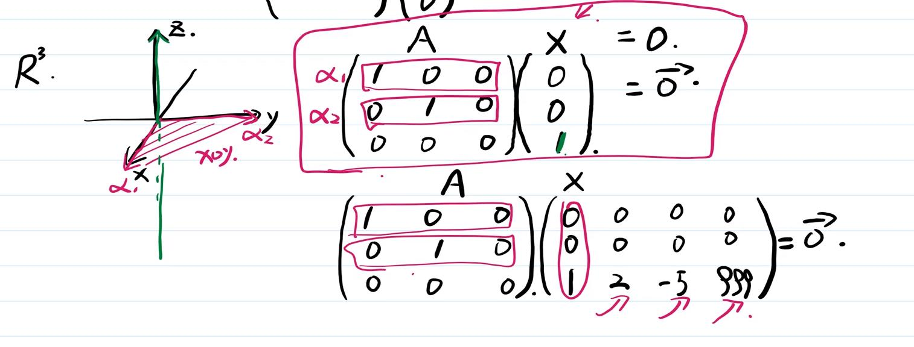
- 举个$R^3$的例子, 左边是行空间(行向量张成的空间), X是与该平面垂直的直线
- 得出一些结论:
- 惊为天人
这里就可以插入这个21年真题了, 如果能顺利用解空间解出就表示上面内容已经消化
- 提示: 系数矩阵行空间和解空间正交(正交的空间是唯一的)
正确理解就是: ?x = 0意思是x的解空间与?行空间正交(行向量张成的空间)
- 这里谁是谁的解意思是满足与a行空间正交就可以满足b行空间正交
- 空间正交的话, 比如一个平面正交一个平面, 那么这个平面正交另一个平面里的任何直线
- 开始引入同解
-
- 这里比较震撼的是第四条
- 因为前面讲的正定唯一, 所以如果A张成的行空间和B的相同, 那么各自的解空间也是相同的
- 注意行向量组等价理解为可以互相线性表示是很好的, 见[例题]
- 有了这种理解, 解题会好很多.
- 方法论也见YY
题型四-1 XX的解是YY的解
- 两个必须完全理解
由于前置知识, 所以得到, XX的解是YY的解几何意思是正交于XX行空间的解空间也正交于后YY的行空间
DFS
- 先check两个系数矩阵的形状是否相等
- 相等则直接是两个方程组同解: 同解归约的两个常用结论的结论一
- 不相等
- 构造个方程组归约到同解问题, 然后利用同解的结论: 方程组同解问题(解空间相等, X_1和X_2列向量组等价))
- 通常用r(A) = r(B)或者行向量组等价的线性表示
- 构造个方程组归约到同解问题, 然后利用同解的结论: 方程组同解问题(解空间相等, X_1和X_2列向量组等价))
- 先check两个系数矩阵的形状是否相等
4.27标准的题, 可以不用管方法一
题型四-2 两个方程组同解
- 4.28两个方程组同解, 但是重要特征是其中一个方程组无参数!!
- 所以李正元求了II的$x_2$不为0的一个特解, 代入I即可得出.
- 4.29两个方程组都有参数, 所以4.28的方法不好用
- 分析其性质可以得到两个方程组的秩为2, 用三秩相等即可
- 注意两组解要check其满不满足题干等价的条件.
题型五 线性方程组的证明题(有反求方程组问题)
题型五-1 反求齐次线性方程组问题
尤承业这部分比YY要好, 有点神.
- 4.30看不懂证明过程, 不过是个结论, 用来做反求方程组的问题, 可暂时跳过(YY讲过:已知通解反求方程组)
- 4.31
- 方法一就是用的4.30的结论, 和YY一样, 只是YY没有直接拿来当结论.
- 方法二是用线性表示写
- 个人觉得应该方法一更好, 熟练掌握.(更好记, 求解更无脑)
题型五-2 各种结论证明
- 4.32是一个常用的证明方法, 结论目前不知道什么用
- 4.33说实话我觉得这是显然的…不知道证明什么, 直接看答案了
- 学习他的证明方法吧
- 4.34经典结论
- 其中的证明方法很好
题型六 可归约到方程组的问题
- 4.35 需要注意最后要的是线性表示, 求出的x解作为系数右乘以各个列向量就可以得到线性表示方程了.
- 4.36
- 解的个数的几何观点:也就是线性方程组唯一解
- 这里用行列式的原因是行列式可以行列混用, 只研究秩是很好的
- 方阵才能研究行列式, 所以研究B先(足够, A无需研究)
- 经典的每行相等的行列式
- 充分性hard, 不会…
- 4.37 经典的AX - XA = B的题型, 非常唯一的解法, 如果不用这个解法其他都基本无法解决
- 归约到线性方程组问题, 解出通解以后返回形式即可.
- 4.38 神题, (3)让我想明白很多
- 线代大题读题应该读全部, 然后选择让计算量最小的方法
- 需要注意(1)求的是基础解系, 把两个解空间的基写出来就行了, 多写肯定扣分
- 注意(3)B是一个矩阵而不是某一个具体的向量$\beta$
- (3)的几何意义就是X中的每个列向量都经过左乘A映射到B中相对应位置的列向量, 所以这里拆成了三个线性方程组.
- 所以归约到了求三个非齐次线性方程组的通解
- 又因为知道了两个齐通基, 所以只需要求三个线性方程组的特解就行了
- 这里可以让三个列向量一起进行初等行变化得到最简来得到解
线性方程组习题记录
-
- 杂糅多个信息翻译
- 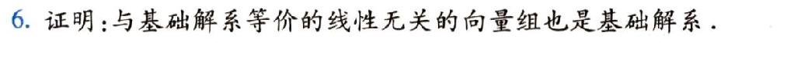
-
- 这个证明题得出满足两点的同样是基础解系
- 1: 等价的向量组
- 2: 线性无关
- 这个证明题得出满足两点的同样是基础解系
特征向量与特征值, 相似, 对角化
-
- 否定条件1很少用到, 但是这个结论知道可以加快做题速度
- 我觉得会推就行, 知道是$f(A) = 0$, 得出特征值只能是0, 那相似对角化个pi
- 否定条件1很少用到, 但是这个结论知道可以加快做题速度
-
- 性质5只要能想到回归秩就可以了, 证明很简单就是定义$A\alpha = \lambda_1\alpha$移项为$(A - \lambda_1 E)\alpha = 0$, 用下秩零定理即可
- 重要结论5没考过但是最近常考分块矩阵, 可以预测下, 其实很简单, A相似于C, 对应分块内容也相似
特征向量值, 相似, 对角化基础
- 两个矩阵是否相似的判别和证明
- 相似的定义
- 相似的传递性, 先check是否能对角化(常用秩零定理), 得到特征值为对角线的对角矩阵
- 再check需要被check的另一个能否对角化, 看特征值是否相同
- 判断是否可对角化
- 先看是否实对称
- n个不同的特征值?
- 秩零定理check特征矩阵(r($\lambda$ E - A) = n - 重数)
- 相似对角
- 四个必要条件
- tr(A) = tr(B)
- |A| = |B|
- |A - $\lambda$ E| = |B - $\lambda$ E|
- r(A) = r(B)
- 四个必要条件
- 求特征向量($\lambda E - A x = 0$), 化行阶梯(行最简)的技巧(注意只有矩阵是特征向量的时候可以这样做)
- 删一行(消0), 留线性无关的2行(基本上都是3阶矩阵) - 本质上就是很好观察出不成比例的其中俩向量是无关的, 然后特征向量这个行列式=0, 所以三个行向量线性相关, 那么多出来那个就一定能被线性表出, 也就能被消0跳转到的地方
- 反求矩阵A的问题答案必唯一
特征相似对角化的结论汇总积累
- $A$是实矩阵, $A^TA$($AA^T$)是一个实对称矩阵(用定义很好验证)(5.48, 5.49)
- 特殊的$\alpha\alpha^T$也是一个实对称矩阵(秩一矩阵)
- $A$和$A^T$的特征多项式相同, 所以特征值相同, 但是特征向量不一定相同
特征相似对角化的重要思维
- 一定要清楚做矩阵变化的意义, 向量原本在自然基下, 然后被A左乘变化为以A的列向量为基的向量
- 所以特征向量在A的作用下换基以后只做了伸缩, 前后的两个向量是线性相关的, 这有时候会成为题目的突破点(5.42)
- 对角化的一个重要途径就是用n个线性无关的特征向量组成过渡矩阵产生不同的特征值组成的对角矩阵
- 秩能够用相似为对角矩阵来求
- 想要用相似对角化就得反射出先check能否相似对角化(n个线性无关的特征向量组成过渡矩阵)
特征相似,对角化的知识总结
相似变换下的不变性质[编辑]
两个相似的矩阵有许多相同的性质：
这种现象的原因有两个：
- 两个相似的矩阵可以看做是同一个线性变换的“两面”，即在两个不同的基 “基 (代数)”)下的表现。
- 映射_X_ ↦ {\\displaystyle \\mapsto }
_P_−1_XP_是从_n_阶方阵射到_n_阶方阵的一个双射同构，因为_P_是可逆的。
因此，在给定了矩阵_A_后，只要能找到一个与之相似而又足够“简单”的“规范形式”_B_，那么对_A_的研究就可以转化为对更简单的矩阵_B_的研究。比如说_A_被称为可对角化的，如果它与一个对角矩阵相似。不是所有的矩阵都可以对角化，但至少在复数域（或任意的代数闭域）内，所有的矩阵都相似于一些被称为若尔当标准形的简单的矩阵。另一种标准形：弗罗贝尼乌斯标准形则在任意的域上都适用。只要查看_A_和_B_所对应的标准形是否一致，就能知道两者是否相似。
特征向量和特征值
以下的推论要做到能在做题的时候条件反射才是合格的
-
- 定理5.2里没有说$A^T$的特征向量不变, 实际上, A^T的特征向量确实可能发生了变换
- 定理5.2的推论非常常用, 要能条件反射, 括号中的于是不满足$f(\lambda) = 0$的$\lambda$就不是特征值
- 定理5.4YY也说过

- 这里可以更进一步: 秩一矩阵(YY-xiehou))
- 秩一矩阵就有$\alpha\beta^T$的形式, 特殊的有$\alpha\alpha^T$也是(17年真题).
-
- 更多见矩阵方程和特征值的转化(更多重要细节))
- 注意这里$A^*$的特征值直接是遮住这个特征值为另外两个特征值的乘积(不要做真的除法, 因为|A|可能为0)

补充
TODO:
n阶矩阵的相似关系(相似矩阵)
-
- 全部记忆, 现推很慢, 但是也要会推
-
- 定理5.7经常会有A+aE相似于B+aE, 原理是任何非零向量是E的特征向量, 所以是可以和A同特征向量的(是A的特征向量就一定也是E的特征向量, 两者的和满足相似矩阵)
- 注意f(A)的意思是以A的多项式, 推导是用右乘同一特征向量
- 所以要求能主动构造出f(A)和f(B)
- 与此同时又会常要check r(A+aE)和r(B+aE)(18T7)
- 定理5.8的四:
- 例5.3要会证明
- 评注很显然, 先A后B和先B后A伸缩变化的比例是一样的, 特征向量的伸缩是一样的
- AB和BA的特征值相同, 这是显然的, 先B后A和先A后B的变换是等价的, 但是做题要能结合特征值条件反射.
- 因为AB和BA的特征值相同, tr和行列式也相同(tr在13倒数第二题可以得到, 可以减少计算量)
- 定理5.7经常会有A+aE相似于B+aE, 原理是任何非零向量是E的特征向量, 所以是可以和A同特征向量的(是A的特征向量就一定也是E的特征向量, 两者的和满足相似矩阵)
相似的必要条件(YY)
-
- 必要条件add: 特征值相同且相同特征值的特征向量个数相同(完善一下只讲特征值相同)
- 特征多项式相同是非常强力的
- 如果$\boldsymbol{A}$和$\boldsymbol{B}$是相似矩阵，那么两者实际上是同一个线性映射在不同基下的代数表示
- 如果是实对称矩阵, 也就是: 两实对称矩阵具有相同的特征多项式, 则两个实对称矩阵一定相似于以它们的特征值为对角元的对角矩阵
- 2013T8 lyf解析
- 相似矩阵特征多项式相同, $r(\lambda E - A) = r(\lambda E - B)$(也可以说是相同特征值的特征向量个数相同)
- 大题可以直接用, 就说A相似于B, 所以$r(\lambda E - A) = r(\lambda E - B)$
- 当三阶的时候该结论又是充要条件:
- 相似矩阵特征值相同(因为换基后伸缩不变, 但是注意特向量可能会不同)
- 相似矩阵行列式相同(因为特征值相同)
- 相似矩阵迹相同(因为特征值相同)
-
相似对角化
-
- 要清楚为什么要n个线性无关
- 这里代数地去想, 只有A都变为特征值才可以恒等变形成对角矩阵的样子
- 所以必须是特征向量
- 相似对角化也就是相似于对角矩阵
- 所以P必须是可逆的, 所以必须n个向量线性无关
- 结合起来就是n个线性无关的特征向量
- 几何得去想, 其意义其实就是以特征向量为A变换以后的基
- 这里代数地去想, 只有A都变为特征值才可以恒等变形成对角矩阵的样子
- 这里的分析一般, 见对角化
- 判别法则二其实就是为了满足法则一, 比如二重特征值必须要有对应两个线性无关的特征向量才行
- check$k_i = n - r(A - \lambda_iE)$只需要会2重及其以上
- 两两不相同, 就分别有一个线性无关的特征向量
- 要清楚为什么要n个线性无关
实对称矩阵的相似对角化
-
- 5.9II, 几何重数等于代数重数确保了一定能对角化, 这就和特征值扯上了关系
- 实对称矩阵用正交矩阵来相似对角化的一个意义在于可以寻找更好的特征向量(只有实对称矩阵可以构造出正交矩阵来相似对角化)
- 实对称矩阵特征值不同的特征向量相互正交
- 如果特征值相同, 不一定正交, 所以如果正交对角化就需要正交化或者赋值取到正交的解基
- 可以用正交矩阵相似对角化, 而不用只是求n个特征向量构成的过渡矩阵P来相似对角化, 让$P^{-1}$变得好算
- 又由于实对称矩阵必可相似对角化，同一特征值下的特征向量必然线性无关
- 线性无关则特征向量张成特征平面/特征空间，那么特征平面上的任何向量都仍然是特征向量
- λx=Ax表示特征向量相当于沿此方向进行特征值倍数的放缩，如果一个特征值有两个线性无关的特征向量，说明在两个方向上均匀缩放，那么用这两个线性无关特征向量作为基表示整个平面，平面上处处都是均匀缩放
反对称矩阵
- 24合工大很喜欢考,
- 反对称矩阵的主对角元素全为零
- 奇数阶反对称矩阵的行列式值为0。(这个从定义等式两边取行列式可以快速得到)
- 秩为偶数
特征相似对角化的小操作(重要)
条件反射线性无关凑定义(真题重点)
凑aE快速求秩
- 利用秩一矩阵好求特征值的性质, 来凑aE
- 特殊的, 如果对角线上是a, 那么这个方法也可以拆, 不需要一定是秩一矩阵, 也会让计算变得简单
引入未知数
- 多引入特征值的未知数来进行恒等变形, 会让生活更加轻松.
数字重数居然大于几何重数(发现错误)
- 在求特征值的时候, 有明显的错误就是如果只是单根特征值但是求出了两个特征向量, 这时候一定是有问题的, 应该重新算.
规范地书写多项式的特征向量不变
-
- 右乘以特征向量
知道一些向量线性无关证明其他向量先线性无关
通常使用定义法
判断是不是解
- 通常就是代入, 然后看条件能否和这个代入的式子产生什么性质, 矛盾…
利用相似对角化求矩阵的秩(知秩知特征同理)
- 第一个想就是能不能对角化吧, 比如实对称矩阵一定可以对角化, 所以得到了特征秩就得到了秩
- 首先判断其可以相似对角化, 就是判断有没有n个线性无关的特征向量
- 如果A的特征值不同产生出的n个不同的线性无关的特征向量, 那A的多项式一样有n个线性无关的特征向量.
就是求其特征值, 然后用特征秩相似为对角阵, 然后就可以看出秩了
证明可逆矩阵
抽象型一般就是用线性无关, 然后用定义法(假设不全为0, 找出矛盾)
常常手动右乘特征向量
有时候一些题干条件右边特征向量就简单了
比如要证明A=E, 那就$A\alpha = \alpha$, 意思是证明只有特征值1
凑转置
Q ( P )的列分块
- 启发自5.42
A的特征值不好求换基(相似后特征值不变)
- 把5.37刷透彻即可(能秒做)
- 即使不给(1)直接写(2)也应该想到这么写
- (3)意思是B可相似于对角矩阵, A~B, 所以A相似于同一个对角矩阵
A11+A22+A33
- 条件反射等于$tr(A^*)$
特征相似对角化的条件反射
- A的特征值互不相等, 所以有n个线性无关的特征向量, 一定可以相似对角化, 并且对角线上的元素就是A的特征值, 为3个互不相等数
- 但不是充要条件(22T5考了)
对A右乘向量试出特征值
- 2013最后一题, 根据题干给的信息只能去试出特征值
- 因为为了利用上正交的性质, 直接拿某些向量去右乘A, 如果得到常数, 这个常数就是特征值.
矩阵方程和特征值的转化(xiehou更多重要细节)
做题的重要思维: 右乘特征向量
- 右乘以后, 右边原本是零矩阵, 后变成零向量
- 特征向量不能为零向量
得出的特征值是或, 也就是可以都是其中一个数也可以是两个都有
-
- 如果式子出现了A的逆, 那么就可以确定特征值一定不为0
- B等于f(A)的话就可以直接得到特征值
秩1矩阵相似对角化的证明(xiehou lzy)
-
- xiehou强调了类似这道题的证明过程(lzy更本质)
看到矩阵多项式(比如A^2 = A)(lzy, xiehou)
- $A^2=A$也叫幂等矩阵
条件反射出特征值只能从该特征值多项式的解的集合中取得
- 然后可以进行讨论了, 题目经常会讨论
lzy3.45, 5.38, 5.39就是讨论的这个问题
lzy5.38
- 首先要证明A可对角化, 就要证明A有n个线性无关的特征向量
- 倘若从源头证明, 这个f(A) = 0, 可以得到特征值只能为a或b
- 此时需要证明属于a或b的特征向量总和为n
- 此时假设a不是或者不是A的特征值是一样的, 不妨讨论b
- 假设b不是A的特征值, 那用行列式工具check|A-bE|不为0, 所以A-bE可逆, 所以(A-aE)只能会零矩阵
- 此时A = aE, 直接就是对角矩阵
- 假设b是A的特征向量, 为了得到b的特征向量的个数, 我们开始取$(A-bE)X = 0$的基础解系
- 设$\eta_1, \eta_2, …, \eta_t$是其齐次线性方程组的一个基础解系, $t = n - r(A-bE)$
- 此时企图获取a的特征向量个数
- 需要使用(A-aE)(A-bE)=0的DFS路径1: (A-bE)的列向量是(A-aE)X = 0的解(需要注意这些解有的线性相关)
- 为了取得真的有效的解, 设$\gamma_1, \gamma_2, …, \gamma_k$为列向量组的极大无关组, k = r(A - bE)
- 所以b有$n - r(A-bE)$个线性无关的特征向量, a有$r(A-bE)$个, 两者和刚好为n
- 得证
- 对应xh129
- 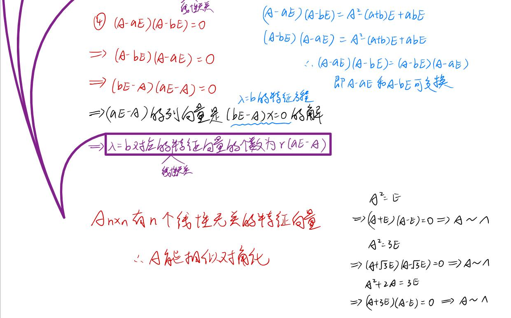
同一特征值的特征向量的非零线性组合仍是同一特征值的特征向量(xiehou)(真题)
- 反之, 不同特征值的特征向量的线性组合没什么用
- 其实这是显然的, 回想特征向量的求解过程, 其实就是特征方程组的求解过程, 假设解的基础解系有2个, 那么得到的通解就是两个特征向量的非零(系数不能全为0, 不然就是零向量了)线性组合, 所以这个结论其实就是显然的
- 究其原因就是通常把特征向量当成了固定系数的了.
反之, 不同特征值的特征向量的非零线性组合不是对应特征值的特征向量
相似做加减法后, 要看特征向量是否相同
-
- 应该要正确理解这个题目的意思, 意思是选项里两个能够通过同一个P来做换基做变换后换回来
- 归约为问特征向量是否相同, 所以就归约到了矩阵转置, 伴随, 求逆后的特征向量是否变换
- 要保证P是相同的, 也就是要保证组成P的特征向量是相同的才能满足相似的定义check
- 应该要正确理解这个题目的意思, 意思是选项里两个能够通过同一个P来做换基做变换后换回来
相似的所有考法(YY, xiehou)
利用相似的必要条件求参数
这里不够, 再补充: n阶矩阵的相似关系(相似矩阵))
- 真题目前没有全出过, 但是很可能会出, 模拟题会出
相似对角化的充要条件
-
- 这里需要自己能推理
- 已知3个特征值, 2, 2, 4
- 4肯定对应着一个, 2因为是重数, 只能确定最多俩特征向量.
- 此时$Ax = 2x$需要有两个特征向量等价于$(A-2E)x = 0$有两个线性无关的解(也就是要求基础解系的解向量个数为2)
- 通过秩零定理可得到A要想可相似对角化需要满足$r(A - 2E) = 3 - 2 = 1$
做题时只需要check重特征值$\lambda$的$r(A - \lambda E)$是否等于阶数-重数
- 真题一般都是3阶, 重数是2, 所以基本上都是只check秩是否为1
-
- 这题C是对角矩阵, 主要是要看能不能相似对角化, 以及对角元素必须是其特征值
-
- 04年的特征方程很难处理, 然后还需要参数讨论
- 见YY讲解即可
证明两个非对角矩阵相似(用对角矩阵来过渡)
- 注意这里对角阵必须是一样的, 也就是特征值相等
- 证明特征值相等
- 相似于对角矩阵
14数三
-
- A是实对称矩阵所以肯定可以相似对角化, 所以得出特征值即可
- B不实对称, 必须通过其充分必要条件来check重特征值来确定有n个线性无关的特征向量来相似对角化.
- xiehou也讲了, 应该像李艳芳那样写, YY不规范
已知AB相似求P使得A相似于B(用对角矩阵来过渡)
利用相似对角化的理论反求A
这里主要是要注意0特征值非常隐蔽
-
- 遇到第五条这个变形, 立刻应该想到转回去
- 第六条等价于用李正元讲的特征多项式定理5.2的推论比较好
- 当然直接像YY这样证明也是要会的(右乘以个特征向量, 这也是非常重要的操作)
- 第六条常和第三条结合
实对称矩阵不告知全部特征向量
主要是利用实对称矩阵的不同特征值的特征向量正交的性质
-
- 这个和李正元5.13是同类的
-
- 验证, 就代入A a = lambda a即可
经典套路题之矩阵分解+对角化
- 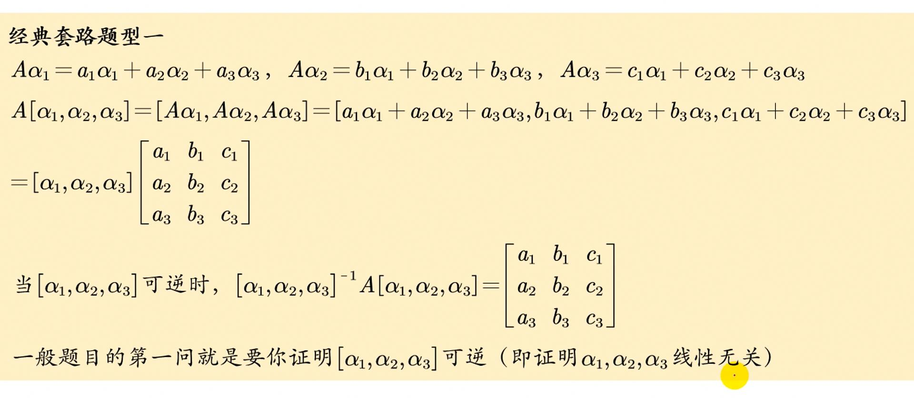
-
- 一般是抽象的三个$\alpha$, 直接写结果就好了
-
- 这道真题很不错
经典套路题之带A的矩阵分解+对角化(YY, xiehou)
-
- 之后和上个无A的矩阵分解差不多

- 证明是不是基础解系就是要这两个是线性无关解和解向量个数刚好满足秩零定理
- 无关可由题干的三个线性无关用定义法得到, 解的话就是代入看是否满足
- 解向量个数就是要求$r(A^2 - 2E)$
- 证明是不是基础解系就是要这两个是线性无关解和解向量个数刚好满足秩零定理
特征题型前瞻
题型一 关于特征值的特征向量的定义
- 5.4就定义
- 5.5就定义和伴随的特征性质
- 5.6的解法是很快的, 必须掌握, 考场上使用.
- 5.7用了非常规的方法, (我第一次写就是常规方法…)
- 因为三个特征向量线性无关(特征值不同), 所以他们可以作为$R^3$基, 所有的三维向量都可以被表示
- 所以先求出其线性表示
- 然后直接算结果, A直接换成对应特征值即可, 巨好算
题型二 关于特征值与特征向量的计算
题型二-1 具体矩阵
基本题, 需要注意非零向量
- 5.8
- 5.9
- 用了A+nE的技巧(定理5.5)来减少计算量(tql)
- 5.10
- 一样用了定理5.5以及秩一矩阵的性质
题型二-2 抽象矩阵特征值的计算
- 5.11
- 方法一特征值的定义和线性无关的定义.(见方, 解答不好)
- 方法二用了矩阵分解和相似特征值相等, 行列式相等的性质
- 5.12
- 条件能得到两个特征值和向量
- 矩阵分解得到剩下一个
- (2)要用初等变换好求
- 5.13
- 实对称矩阵, 一定能相似对角化
- 秩为2, 则有个特征值是0
- 题干能得到两个特征向量, 能利用正交得到第三个特征向量
- 实对称矩阵, 一定能相似对角化
- 5.14
- (1)是考定理5.2的推论, 多项式的一些结论
- (2)很容易想到行列式等于特征向量的积, A的特征值和A+2E的特征值的关系, 即可证明.
题型三 应用于行列式的计算
- 5.15, 5.16比较简单
- 5.17
- 法1: 用一下定理5.1可以得到特征值, 定理5.2就可以求得目标特征值
- 法2: 对所求因式分解
- 5.18
- 两个列向量, 需要看出是秩一矩阵, 然后用秩一矩阵的特征值得到A的特征值, 再如上题得到所求.
- 5.19
- 秩一矩阵的性质
- 可以得到A的特征值
- 秩一矩阵的性质
- 5.20
- 非常隐蔽, 需要看出B是$\alpha\beta^T$型, 用上秩一矩阵的性质.
- 5.20相关例题的2说的是如果对角线上加的值都不一样的处理方法
题型四 应用于判断矩阵的可逆性
- 5.21 定理5.2的推论
- 5.22
- (1)方也推荐用这个
- (2)方说只用这一种就可以了:
- (1)方也推荐用这个
- 5.23经典 秩一矩阵的结论
- 5.24是用来熟悉多项式的推论
题型五 相似与相似对角化
题型五-1
- 5.25 判断秩用相似对角化的对角矩阵
- 5.26
- 极好
- A到伴随特征值变, 特征向量不变, B到2E特征值变, 特征向量不变, 相似则反之
- 要能特征向量是左乘过渡矩阵的逆
- A的特征值要能想到拆为秩一矩阵和cE
题型五-2 两个矩阵相似(对角矩阵过渡)和相似于对角矩阵
- 5.27 定理5.2推论就可以写出
- 5.28证明两个矩阵相似(用对角矩阵来过渡))
- 5.29 用对角矩阵过渡的经典题
- 5.30的行列式见化零降阶法(常用于特征))对a进行讨论, 然后check二重根是否有两个线性无关的解向量(法则二)
- 5.31是经典套路题之矩阵分解+对角化类型
- 5.32同样如5.30般化零降阶, 讨论a的时候注意要讨论是否为0(第一次我就错了, 必须要注意), 然后就是用秩零定理去check(法则二)线性无关的解个数
题型五-3 求可逆矩阵来相似对角化(经典)
- 5.33注意B是一个对角矩阵, 所以A具有可对角化的性质, 所以需要check特征值2, 之后是基本题型: 求可逆矩阵来相似
5.34经典, 可相似对角化就是要有n个线性无关的特征向量, 所以先求特征值, 然后用秩零定理来check得到参数, 最后求特征向量得到可逆矩阵完成对角化
- 相关例题同理
- 5.35可以用经典方法做, 但是评注给了另一个方法, 但是难想.
- 5.36就是秩一矩阵(相关例题是一样的, 秩一矩阵的另一种形式罢了)
- xiehou强调了这个结论的证明
题型五-4 矩阵分解+对角化
- 同YY经典套路题之矩阵分解+对角化
- 5.37 的启发就是如果一个不具体矩阵的不好求特征值, 可以换基(做相似)
题型五-5
- 5.38我看方了…都没懂, 但是结论可以
- 过于深刻, 暂时把握不住…
题型六 实对称矩阵
- A是实对称矩阵等价于A可相似对角化, 且特征值都为实数
- 实对称矩阵不告知全部特征向量
题型六-1 实对称矩阵之正交矩阵
- 实对称矩阵可正交对角化, 有n个线性无关的正交特征向量
- 单位化放最后一起单位化, 不要和李正元一样
- 如果要正交化, 那就先正交化再单位化
- 下面的例题反映了, 即使有了正交变化, 依然可以用过渡矩阵的初等变化来求A(而仍然不需要用矩阵乘法, 更不需要用逆矩阵)
- 5.40是基本题, 但是这里给了个很重要的避开正交化的技巧.
- (1)实对称求出的特征值无重复, 所以直接都是相互正交的无脑求即可.
- (2)就有重特征值了, 这里方讲的极好
- 5.41
- (1)题干是经典的矩阵分解和线性方程组的解, 得出特征值和和特征向量
- (2)这里必须要正交化了, 因为直接给了特征向量
- (3)很神奇, 即使(2)避免了求可逆矩阵, 但是仍然可以从最开始的AP=P?(?为对角矩阵)做初等变化得到
- 当然直接第二题继续做了矩阵乘法也是可以的.
- 求6高次常规的见方, 突破口是$E$要能看作$QQ^T$:
- 直接用特征做也是可以的(但是感觉考试用不到, 必须要保证所求是实对称矩阵)
- 5.42挖掘条件极好
- 突破点在于要非常清楚, A作用于特征向量只会拉伸, 所以会保证线性相关, 借此来求出A
- 一定要清楚做矩阵变化的意义, 向量原本在自然基下, 然后被A左乘变化为以A的列向量为基的向量
- 确保清楚能正交对角化的矩阵的列向量是特征向量构成的
- 或者也可以像方一样直接用对角化式子(仔细思考以后方的更好)
- 方重要的操作是把Q(P)，列分块为列矩阵, 这个操作极好
- (2)然后求出的A是实对称矩阵, 所以一定能找到Q做正交对角化, 就是常规题了
题型六-2 不同特征值的特征向量正交
- 5.43
- 经典题, 然后得到Q以后可以用矩阵乘法得到A也可以直接用过渡矩阵的初等变化求得.
5.44
- B是实对称矩阵这里跳步了, 需要补上
- 依然只是用过渡矩阵的初等变化来去B
-
- 三个方法, 还是用初等变化比较熟悉
- B是实对称矩阵这里跳步了, 需要补上
题型六-3 其他
5.45是经典秩一矩阵的结论, 真的一直在强调
- 这里$A = c\alpha\alpha^T$
5.46用了5.45的结论, 惊为天人
- 常规的方法就是求出特征向量构造过渡矩阵进行初等变化求出
- 5.47 知道右乘特征向量就好了
- 5.48 要知道$A^TA$($AA^T$)是实对称矩阵
- 然后要知道对于这种证明题需要左乘转置来凑
- 5.49 三个需要一些恒等变形的小证明
特征相似对角化习题记录
- 一-4是一个很重要的结论:
- $A$和$A^T$同特征值的特征向量不一定相同, 但是$A^*$是相同的
- 一-6有点难度且非常好, 从定义出发会比较好, 会得出$\lambda$为0, 这样也可以推出B是对的(秩零定理)
- C有点奇怪, 是直接去构造找到一个可逆矩阵…
- 二-4 需要明确
- 二-5, 6 前面例题懂了这题就是秒
- 二-8和5.33又有一点不一样, 相互补充
- 特征值相同
- 三-4的解答和例题貌似不一样, 我是直接像例题一样由A的多项式来得到B的特征值, 而其中因为特征值没有变化, 所以还是3个线性无关的特征向量.
- 三-7 用定义法+线性无关来做, 好题
二次型
二次型基础
- 用正交变换化二次型为标准型(正交合同对角化)
- 得到A常规
- 求特征值就是看处理行列式的技术
- 求特征向量的矩阵的时候可以消一行, 然后基础解系个数用秩零定理
- 得到的基础解析需要正交就正交化, 需要单位化就单位化(不单位的话最后出来的对角矩阵会不一样，变成相应特征值的某个倍数)(此时组成Q)
- 判断矩阵是否合同
- 因为线性变化不改变正负惯性指数, 所以只要看正负惯性指数是否相同(惯性定理)
- 判断正定
- 实对称矩阵正定的一个充要条件: 特征值都大于0
- 各阶顺序主子式都大于0
完全理解二次型(帮助做题)
写了李正元以后感觉还是没有理解透彻, 所以这里再对疑惑的地方重新思考整理到可以显然接受的情况.
什么是二次型
二次型就是齐二次多项式函数, 有平方项和交叉项
什么是正交对角化
这其实是上一章探讨的内容, 这里再复习一下
二次型具有天然的实对称矩阵
- 二次型对应的矩阵是实对称矩阵, 所以必然可正交对角化
为什么要研究标准型(以及规范型)
标准型在几何上就是非常优美的, 而非标准型是很难去研究的
如该例子可见(该例子理解了也就知道为什么要关注为什么要转化为标准型和为什么要关注正负惯性系数.)
为什么一定要正交(正交变换)?
一个二次型表示为$x^TAx$, 要进行换坐标变化(换基)而不改变二次型的几何图案.
正交意味着$P^T = P^{-1}$, 这样就可以既满足相似, 又合同, 而且用的Q是特征向量, 所以必定会相似对角化为特征值为对角的对角矩阵
什么是合同矩阵
- 合同矩阵就是对二次型进行可逆坐标变换(随便的可逆P就可以)并不会改变曲线类型的一件事情(也叫合同变换)
- 合同矩阵不改变曲线的类型也就不改变其正负惯性指数, 也不改变矩阵的秩(p+q=r(n))
- 进一步的也不改变正定性
- 合同矩阵不改变曲线的类型也就不改变其正负惯性指数, 也不改变矩阵的秩(p+q=r(n))
什么是合同对角化
- 在现实处理二次型的时候, 我们的问题通常是: 怎么“在不改变曲线类型的前提下，去掉交叉项”
- 合同矩阵只是对二次型进行坐标变换，并不会改变曲线类型，所以可借助合同矩阵来去掉交叉项。
- 还有一种完成合同对角化的方法，就是拉格朗日配方法
- 直接是代数上的去掉叉项, 然后再转化为$x^TAx$来的到矩阵A(A只是一个矩阵)
- 拉格朗日配方法完成的其实就是合同对角化(等价于用合同矩阵来对角化)
- 见[mtx](https://www.matongxue.com/lessons/1188/parts/820) 需要注意的是这两者虽然都是借助了合同矩阵来进行对角化的, 但是这个矩阵坐标变换不一定是相同的, mtx的例子李都是$x_1x_2 = 1$但是可以看到用的坐标变换矩阵$P^{-1}$是不同的
实际例子有23年李林六套卷其中线代大题
-
- 这题如果用配方法来做就会得到不一样的可逆矩阵.(跟答案不一样不一定错)
什么是规范型
- 正负惯性指数相同此时矩阵是相同的, 为各个二次型之间建起桥梁
- 所以20数学二就可以用规范型为相互合同的矩阵建起桥梁
二次型知识总结
二次型及其矩阵
可逆线性变量替換和矩阵的合同关系

二次型的标准化
标准型所对应的矩阵是对角阵，但并不一定是含有特征值的对角阵！这个对角阵上的主对角线上的元素不一定是特征值。在计算中，用初等变换法和配方法得到最后的标准型所对应的矩阵这个对角阵并不一定含有特征值。但是，用正交线性替换（施密特化）求出的标准型所对应的对角阵就一定必然是含有特征值的对角阵。


惯性定理和惯性指数,实对称矩阵合同的判断
-
- 定理6.3和6.4必须记住
- 实对称矩阵一定能合同为规范型(利用正交变换)
- 两个矩阵合同可以用规范型的对角矩阵过渡
正定二次型和正定矩阵
- 正定首先要满足实对称(因为二次型都是对应的实对称矩阵, 所以常常忽略, 但是如果不是二次型, 应该先说明)
- 这里最重要的就是18年的真题, 方讲的无敌.
- YY也讲了18年那个结论(配方法视频的最后)
-
- 一般矩阵的(实对称矩阵就是充分必要了)
- 定义6.5把这些x表示为一个x向量比较好, 也就是x向量不为0的的时候
- 定义6.5有个隐含的条件, 当取到原点的时候, f(0,0) = 0(这个在最近真题能省很多时间)
- 像18年真题那样
- 定理6.5合同变化只是坐标变换, 换基不会改变图形形状, 自然不会改变正负惯性系数, 继而不会改变正定性.
- 定理6.6特征值都大于0是因为A合同为含有特征值的对角矩阵的时候(对角元素都是平方项的系数), 都是大于0的.
- 定理6.6合同于单位矩阵可以推出下一条
- 定理6.6再加个, 正定则满秩(特征值都是正的or p + q = r(A), A为二次型对应矩阵)
- 定理6.6在真题里考过一次证明, 用的是正定可以开成两个根号相乘
二次型的常用结论汇总
- 6.2
- 如果是正交变换就非常重要, 还相似, 这样可以同时考察相似的知识点(比如相似的必要条件)
- 6.3
- 两个二次型可以用正交变化相互转化的充要条件是他们的矩阵相似, 所以特征值肯定相同
- 6.9给了几个小结论
- A实对称, 代数余子式$A_{ij} = A_{ji}$, $A^{-1}$也是实对称矩阵
- 6.10
- 对实对称矩阵而言，相似 => 合同 => 等价。对一般矩阵而言，相似和合同无必然联系
- 6.29拓展
- 当且仅当两者的乘法可交换（即$AB=BA$）时，两个对称矩阵的积（$AB$）是对称矩阵。两个实对称矩阵乘法可交换当且仅当两者的特征空间相同
- 6.30拓展
- 对于任何方形矩阵X，$X+X^T$是对称矩阵
二次型的重要思维
变换的思维
- x = Cy
- 从坐标变换的角度就是原本向量在自然基下的坐标为x, 经过C的左乘变换到了以A的列向量为基的坐标系下的y坐标
- 从线性方程组的角度就是对x变量做了y换元, C是换元的系数矩阵.
- 这两种思维同等重要, 应该同时思考
- 一般题目会让求C, 一定要清楚列出, 以免做错.
合同对角化的思维
- 首先要知道一个标准型对应一个实对称矩阵, 两者一一对应
- 一定要知道合同对角化的意思是通过合同对角化得到对角矩阵对应着标准型
- 合同对角化有正交合同对角化(在矩阵的维度下操作), 配方法(在代数的维度下操作)
- 实践证明, 正交合同对角化需要求特征值和向量, 还需要注意正交, 最后还要单位化.
- 而配方法则在代数角度完美避开这里的计算, 直接得到$Y = ?X$, 而调整以后的$X = CY$中的C就是过渡矩阵
二次型的小操作
求正交基础解系
-
- lzy6.6
如何验证是否是实对称矩阵
- 自己用定义来, 然后结合转置矩阵的运算性质(和伴随一样)
满秩产生线性方程组联系正定
- 主要是写了6.20
- r(A) = n, 那么$Ax = 0$只有零解, 随便一个向量$\alpha$得$A\alpha \neq 0, 当 \alpha \neq 0$
李正元提到甚至证明的二次型结论
正交变换前后矩阵不仅合同还相似
- 10年就基本考的这个(lzy真题书312T18)
-
- lzy6.2
- 不仅合同而且相似, 这个很重要
- 与此同时, lzy6.6和10真题非常像
因为用到了正交对角化, 当然也就满足该长等式:
分块矩阵正定
A^TA or AA^T满秩则正定

- 这个总感觉和YY AA^T正惯性和秩的一个结论是一样的, YY更加具体
- 首先只要见到$A^TA$, 那么就没有负惯性指数, 其次, 如果满秩了, 那么就正定了.
- 更进一步, 如果告知$A^TA$是正定的, 那么也满秩(充分必要条件)
- 这个在余5线代里疯狂考察
同A的正定
An阶实矩阵, A+A^T正定
-
- 构造如上的一个正定很好用就可以得到A可逆(见6.31)
反对称
-
- lzy6.31
- 24余3T16考到了
- 还考察了A是转置矩阵, A的逆也是转置矩阵(很好证明)
二次型两大题型(YY,真题所有考法)
A不可直接求(相似对角化的理论反求A)
-
- 以下都需要自己知道是如何推导的
-
- 这条经常来将未知的可能的还没确定的特征值确定.
-
- 第六条等价于用李正元讲的特征多项式定理5.2的推论比较好
- 当然直接像YY这样证明也是要会的(右乘以个特征向量, 这也是非常重要的操作)
- 第六条常和第三条结合(因为第六条只能确定特征值只能取啥, 第三条可以确定特征值)
- 第六条等价于用李正元讲的特征多项式定理5.2的推论比较好
-
- 第七条其实就是将合同与相似结合了
- 先都转化为矩阵, 得到$P^TAP = 对角阵$
- 之后就是常规操作了
三个只告知部分特征向量的情形(重难点)
- 李永乐讲了实对称矩阵的相关性质和应用, 感觉不错
-
- 需要注意这里b必须是重根才行
- 原因是A是实对称矩阵, 不同特征值的特征向量相互正交, 所以a对应的特征向量正交于b对应的两个特征向量张成的平面, 当然也正交于这两个特征向量(实对称矩阵几何重数等于代数重数, 所以b一定对应一个特征平面(两个线性无关的特征向量张成的平面))
- 实对称矩阵几何重数必定等于代数重数, n重特征值一定有n个特征向量
-
- 10年二次型大题的注, 非常本质
- 需要注意这里b必须是重根才行
-
- 上面的, 知道了b的两个的两个线性无关的特征向量就可以列出, 秩零定理得到有一个基础解析的解向量个数是一个, $\alpha$是这个方程的非零解
- 这里因为有两个等式, 所以可以有3个不同的特征值(a,b,c)
A实对称, 三个特征值都不相同且只知道一个特征向量(10年最后一题)
- 用常规$|A - \lambdaE|$得到其中第二个, 一定是正交的(实对称矩阵特征值不相同的特征向量相互正交)
二次型的五种考法(目前)
TODO: 先做李正元
A可直接求
-
- 其实相同特征值确定了, 2, 3, 4都是等价的, 1更强一些
- 特征方程相同则特征值相同
- 行列式为特征值乘积, 所以相同
- 迹为特征值和，所以相同
- 因为二次型都对应一个实对称矩阵, 所以一定能相似对角化, 特征向量组成的过渡矩阵产生的对角矩阵秩也相同.
- 第一条就非常强
- 优先考虑前三条
- 其实相同特征值确定了, 2, 3, 4都是等价的, 1更强一些
配方法(YY,求标准和合同,以及其他)
YY的配方法感觉系数处理会出现分数, 对于我来说错误率会很高, 所以如李正元和mtx的比较好
合同变换法求规范型(YY)
- 这部分李正元貌似没有, 23年真题用配方和正交变换都不如这个方法好
-
- 根本原因就是不停地进行左右乘以初等矩阵来进行合同变换进行换基(同时坐标也换了), 但是这样的操作不改变曲线类型
- 放下面的原因是不同时进行行变化

- 这一块多看视频多写题熟练
例子:
TODO: 剩下一题还没写
AA^T正惯性和秩的一个结论(全平方和,YY)
- 事实证明, 这个结论的切入角度和相关的信息切入角度才是重要的
- 比如如果其中一个平方项的系数为2, 那么就得不到$AA^T$, 但是可以由其他的秩的不等式得到秩的性质
- YY其他可以秒杀已经平方的比较好
李正元也讲了这题, 见李正元提到甚至证明的二次型结论, 6.17
-
- 这里推导的全过程要滚瓜烂熟, 这是不变量.(13年真题会变一些)
- 首先将平方内部的x设置为列向量, 再分别把abc都设置为列向量
- 每个都转化为两种形式的积, 最后合并
- 在将合并后的展开为两个矩阵, 得到$AA^T$
- 然后求个转置check是否是这个二次型的矩阵
- 此时切入角度有很多
- 一是矩阵的秩, $r(AA^T) = r(A)$
- 二是正惯性指数就是秩, 负惯性指数为0
- 当r(f) == n的时候(r(A) == n), 就正定了
- 三是可以注意到$\alpha\alpha^T$是秩一矩阵, 对于矩阵秩的不等式也是个信息点
- 注意这里$AA^T$和$A^TA$都可以, 取决于怎么拆(视谁为系数)
- 这里推导的全过程要滚瓜烂熟, 这是不变量.(13年真题会变一些)
-
- 18年真题是同类型的
-
- 这题比较神奇, 如果直接去像配方法那样换, 会发现就是可逆变换, 所以正定
880十二综填2秒杀
xiehou关于二次型的点(极好)
二次型不是实对称矩阵的情况(xiehou, lzy)
lzy6.30也谈论了这个
- 对于任何方形矩阵X，$X+X^T$是对称矩阵
初等行变换求正负惯性指数(xiehou有问题)
- 后面经过我的推导, 发现其实局限性可以被消除, 可以不省去列变换(右乘三大可逆矩阵), 然后把$a_{11}$弄为一个正数即可
- 建议是换行
- 以下xh的就可以不管了, 那个例外也是能做的
- 见求合同pq规范型

该方法只做倍加变换, 交换和倍乘都不能做
- 如果该行列式无法通过倍加变换得到行阶梯形, 那就失效
-
- 这是个例外, 无法使用这个方法
可逆和正交线性变换的对比(自己总结)
- 得益于23数一大题搞懂了这个
- 合同变换是很松的性质, 只需要满足$P$可逆, 做$x=Py$这样的可逆线性变换就可以将$x^TAx$转化为$y^TP^TAPy$, 这样就诞生了合同矩阵$P^TAP = B$, A合同于B
- 合同的基本盘是不改变曲线形状, 对应的也不改变正负惯性指数, 也不改变矩阵的秩($r(A) = r(B)$), A和B合同于同一个规范型矩阵
- 此时如果P是正交的矩阵, 也就是满足$Q^{-1} = Q^T$(改P为Q暗示正交(习惯))
- 此时不仅合同, 也满足了$Q^{-1}AQ = B$, A和B相似, 他们可以相似于同一个对角矩阵
- 所以正交变换会多一个相似的性质, 这是重中之重
- 注意这里的结果都是充分必要条件, 比如如果要check两个矩阵是否可以由正交变换得到那就必须要两个矩阵相似, 所以特征值相同(相似于同一个对角矩阵)
两个矩阵合同(用规范性过渡)
TODO: 20数二真题考的这个, 自己总结下
二次型小题(xiehou)
- 就讲义的那些题目反复刷即可, 全都很重要.
记录下
- 22常规
- 23还可用AA^T正惯性和秩的一个结论(全平方和,YY))
实对称矩阵的谱分解定理反求A

大题示范步骤

题型一 二次型的标准化
- 6.2是标准的经典要求写正交变化的题目, 必须滚瓜烂熟
- 6.3的题干比较快速准确地翻译得到可相似化为包含特征值的对角阵
- 6.4也是常规题
- 6.5的(1)(2)常规, (3)用配方法比较好
- 6.6比较综合, 对应A不可直接求(相似对角化的理论反求A))的第七条, 又需要反求A(用初等矩阵)
- 这里求用初等变化求A的优越性就展现了, 这里正交矩阵因为单位化的关系极其可怕
- 而使用初等变化可以不要求单位化但要求正交(此时正交矩阵Q化为非单位化的过渡矩阵P)
- 6.7 思路见合同对角化的思维
- 也可以用合同变换法求规范型
- 相关例题也极好, 用分块矩阵去做
题型二 惯性指数与合同问题
- 理论基础
- 这块不知道为什么YY没有讲
题型二-1 经典题
- 6.8
- 6.9极好, 结合了逆和伴随
题型二-2 相似和合同(特征值)
看特征值即可
6.10
- 对实对称矩阵而言，相似 => 合同 => 等价。对一般矩阵而言，相似和合同无必然联系
- 相关例题要能想到凑aE
- 6.11
- 凑aE看特征值, 不要用行列式…
- 6.12
- 用行列式和迹来探究特征值的正负
- 6.13
- 凑aE快速求特征值, 规范型也就是告知了正惯性数2, 负0, 特征值的正负就可以确定了(确定a)
- 6.14
- 题干意思就是对应的矩阵是否合同, 研究特征值
题型三 正定问题
归约为特征问题是最nice的
6.15 特征值快速解决
- 6.16 顺序主子式解决
- 6.17 方法一是一个已经是平方的结论
- 方法一不如YY的用秩
- 方法二是方补充的一个概念, 感觉相当好
- 6.18
- 要手动验证B是不是实对称矩阵(定义和运算性质)
- 是实对称矩阵说明可以构造过渡矩阵来对角化
- 正定就是特征值都大于0, 相似对角化得到的对角矩阵的元素都大于0
- 6.19
- 不会, 但是是很好的搞懂正定的题目.
- TODO: 没吃透相关例题也没吃透
- 6.20
- 见满秩产生线性方程组联系正定
- 这个证明题告知了原本正定, 经过可逆变换(左乘$B^T$, 右乘$B$)是不改变正定的(更一般的是不改变p和q的)
- 6.21 经典的YY第六条+第三条
- 这里特征值全正就可以正定了
- 6.22 终于用了合同于单位矩阵了, 一直没看到有
- 然后完全不会…, 此题跳过, 看呆了
- 6.23
- 自己写没写出来
- 答案通俗易懂
- 6.24用了23的结论
- 依然是讲原本一个矩阵正定, 做合同变换, 仍然正定
- 预测题, 真题最近很喜欢考分块矩阵
- 6.25
- 经典YY第七条)和不告知全部向量
- 然后反求A
- 6.26(*)
- 证明了一个比较重要的结论(24余4有)
这个总感觉和YY AA^T正惯性和秩的一个结论是一样的, YY更加具体(没有啥关系…)
- 6.27
- 经典结论
- 6.28
- 神奇, 为了证明可以相似于对角阵, 那就先相似于一个实对称矩阵…
- 6.29
- 见方的证明
- 6.30
- 对于任何方形矩阵X，$X+X^T$是对称矩阵
- 从定义出发, 展开找到内积, 注意Ax结果是一个向量, 所以令为一个向量更好发现内积
- 或者像答案那样证明, 从源点dfs出来的线性方程组理论
- 6.31
- 方法一是用6.30的构造来证明可逆
- 方法二
二次型习题记录
- 一-1
- 正定的必要条件对于选择题很有用, 对角线上元素都大于0
- 然后考虑顺序主子式, 行列式
- 一-2
- 牢记合同充要条件是正负惯性指数相同, 可以由特征值的正负得到
- 一-3
- 实对称矩阵必定能相似对角化为特征值对角阵, 这里特征值相同, 所以刚好相似
- 特征值相同那正负惯性系数必定相同, 所以合同
- 一-4和一-5必须搞透
- 二-1
- 直接用YY配方法里的结论或者展开直接得到对应矩阵
- 二-2
- 最好的办法就是配方法得到标准型就可以得到惯性系数
- 二-3
- 就研究对应矩阵即可
- 二-4
- 因为是正交变换, 所以得到的标准型的系数就是特征值, 且两个矩阵相似
- 用相似的必要性即可解决
- 二-5
- 不要忘了顺序主子式
- 二-6
- 秩一矩阵的性质, 然后特征值来确定正惯性系数即可
- 三-1经典题
- 三-2
- 求作变换化二次型为规范形用配方法简单.
- 三-3
- 没懂这题干嘛
- 三-4
- 先证明实对称定义, 后证明特征值都大于0即可
- 三-5
- 和例题的证明差不多, 要证明正定别忘了定义来
- 同时也是经典结论
- 三-6
- 特征值秒杀
- 三-7
- 这题很神奇, 开眼了
- 具体的矩阵, 用初等矩阵来找到可逆矩阵来把右下角元素移到左上角
- 定理6.5: 合同变化保证正定性, 所以依然正定, 顺序主子式即可
二次型所有(先写部分)真题(xiehou, xiaotong)
a组
没什么额外可记的, 见讲义即可
b组
21数一(非常重要xh and xt都强调了)

- 第一题
- 求特征值
- 法1(本题最好, 因为有a, 其余方法都挺烦的) 可以拆E, 直接就得到特征值了
- 法2直接算特征行列式
- 法3用特征多项式公式
- 求特征向量
- 注意这里都是要正交的且单位化的特征向量
- 注意随便求, 只要求出两个, 剩下那个直接法向量即可
- 然后内积check一下正确性
- 单位化即可
- 求特征值
- 第二题
- (a+3)E是对角矩阵, 这里和A做差, 不难想到可以通过换基成为对角矩阵
- 其次这里是C的平方, 只有对角矩阵的平方是很好求的, 且很贴和考察利用对角化原理
- 与此同时, 第一题刚好就做了这样的事情 这里又用到了E的妙用(恒等变形))
- 所以这题的做法就很显然了, 首先构造出对角化, 然后用对角化原理进行恒等变形即可, 最后反解出C
23李林六套卷
-
- 第一题其实可以直接求出伴随矩阵的对角阵然后去验证一下
- 也可以像xiehou这样直接操作分析
- 第二题
- lzy知识总结里有, 正定矩阵一定可以合同于E, 所以这个变形一下就是这个意思
- 要求一个可逆矩阵完成了这样的换基(坐标变换), 所以完全可以舍弃第一题直接用配方法, 一步直接得到矩阵为E的规范型, 不过答案没这么写…不知答案最终对错(用特征值得到的P和配方法得到的M矩阵一般是不同的)
- 第一题其实可以直接求出伴随矩阵的对角阵然后去验证一下
20数一三
-
- 这题感觉就是披着二次型的皮考相似
- 第一题实际上用的也是相似的常用结论写的
- 第二题扒开以后就是A可以通过过渡矩阵P相似于B
- 这种题最常用的方法是已知AB相似求P使得A相似于B(用对角矩阵来过渡))
- 也就是19年数二的考法
22数二
-
- 不妨静下心来思考第二题的意思
- 首先分母如果知道正定可相似于E就很容易知道插入个E就是全1的标准型(规范型)
- 求了特征值发现都是正的所以正定, 可以这么操作
- 要研究最大最小值, 代数研究会比较好, 而且肯定涉及不等式放缩, 所以展开
- 分子如果直接用, 会非常蛋疼, 所以必定是需要合同对角化为标准型(没有第一题也应该想到这么做)
- 因为分子换基, 所以分母一样需要换基
c组
20数二真题
- -
-
- 这题的难点是只做了可逆线性变化, 以至于只是不改变正负惯性指数(他们合同, 合同充分必要条件是正负惯性指数相同)
- 第一题
- 法一(答案)p+q=r(n), 所以两者秩相同, 这是解具体型的标准突破口, 然后用一下行列式这个工具
- 法二(我更喜欢)则是直接可以用秩一矩阵求得A的特征值为1+2a, 1-a, 1-a, B用配方法得到pq为21, 所以1+2a为0, 得到答案
- 第二题
- 法一(第一次的想法)
- P让两者都还是只是标准型, 表示出的矩阵也是实对称矩阵, 所以都各自能变换为一个对角矩阵, 因为不相似所以用特征值构成的P变化后不一定相同, 但是因为两者合同, 所以规范型相同, 所以可以用规范型作为桥梁.
- 所以用配方法来各自得到$P_1$, $P_2$, 最终得到题目要求的$P$
- 法二(快速求pq的方法)
- 思考更加本质的东西, 其实就是左乘一个$P^T$, 右乘$P$, A合同B
- 那么直接用求合同pq规范型来写, 但是…不一定有分, 但是这个过程是合理的
- 法三(思考方式提升)
- 想到了比较好的DFS
- 对$x^TAx$做$x=Py$得到$y^TP^TAPy$, 得到了$P^TAP = B$, 也就是A合同于B, 其他没了
- 为了联系A和B, 常见的手段就是合同对角化
- 思考正交合同对角化的可行性, 因为他们都是实对称矩阵, 所以一定能相似对角化, 但是通过相似对角化得到的对角矩阵得看特征值, 然而两者特征值经过计算不一致
- 而配方法是代数上的, 限制非常小, 所以做配方法得到规范型(AB合同规范型相同, 显然选取规范型作为过渡的对角矩阵)
- 代数上写成$P^T_1AP_1 = \Lambda = P^T_2BP_2$
- 不过如果不找规范型, 弄同一个标准型也是没有任何问题的
- 法一(第一次的想法)
23数一真题
- 神题, 搞懂了可逆和合同
- 总结在可逆和正交线性变换的对比(自己总结))
13数一二三21真题
这道题极好, 杂糅结论, 秩的不等式, 秩一矩阵, 也有我刚弄懂的正交矩阵, 叉乘来求(法二)
- 第一题是AA^T正惯性和秩的一个结论(全平方和,-YY))
- 注意这个结论的过程check转置是非常容易忘记的
- 第二题正交变换既相似又合同, 得到的标准型就是相似对角化得到的对角线是特征值
- 所以问题转化为了如果证明特征值是2, 1, 0
- 不难想到定义, $A\alpha = ?\alpha$, 分别验证可以得到$\alpha$和$\beta$的特征值, 只需要再证明秩为2即可(另一个特征值是0)
- 注意到矩阵的两个项都是秩一矩阵, 所以进行放缩得到秩肯定小于等于2, 又因为有俩特征值了, 特征秩就是2, A不满秩, 行列式为0, 所以0一定是特征值(这个大题说一下即可)
- 因此存在这样的正交矩阵Q使得…
- 第二题的第二个切入角度是自己去构造正交矩阵(因为题目告知了$\alpha, \beta$正交, 只需要再找出一个正交即可)
- 所以用求法向量的方法得到第三个向量, 这样三者互相正交
- 第一题是AA^T正惯性和秩的一个结论(全平方和,-YY))
23李林六套卷(秩一)

- 条件反射秩一矩阵, 且反过来是数, 正交矩阵条件反射$AA^T = E$
- 所以操作一下就得到a
- 第二题也都是正常操作
- 条件反射秩一矩阵, 且反过来是数, 正交矩阵条件反射$AA^T = E$
线代大题补充(xt)
- 除了上面的内容, 这里再综合过一下xt的线代大题, 题目多来自于模拟题, 3题真题
21数一大题
抽象矩阵相似问题(xt)
首先要非常理解相似的原理, 能做到像xt那样手动从$PA$推相似的代数原理
- 也要熟知相似的抽象缘由: 相似对角化
- 要求的相似的那个矩阵不是具体的, 但是其他的矩阵是具体的(本题是由初等变化得到的具体矩阵)
二次型分块问题
主要是要分矩阵为列向量, 单独取思考其中的列向量, 这个是很重要的小操作, 只是在二次型突然看到没反应过来
-
- 首先我们要探究我们做过的题都在探讨什么, 二次型讨论xTAx, x是列向量
- 那么这里X是矩阵, 分块一下就和脑子里的东西建立了连接
- 之后看讲解即可, 非常好的一题
秩一矩阵问题
23李林六套卷(秩一))也是差不多的题
-
- 首先要验证一下A是不是二次型的系数矩阵(check下$A=A^T$)
- 这题还是挺不明觉厉的, 就跟着求第一题就完事了
- 求完就发现是一个$f(A) = 0$, 所以就可以得出A的特征值要么是-2要么是1, 又因为p是2, 只能是-2, 1, 1
- 或者直接用秩一矩阵的性质, E是111, 剩下是3, 0, 0, 所以是-2, 1, 1(这还不用管惯性系数)
- 第二题需要求正交矩阵, 显然是需要A是啥样的才能求特征向量, 所以题目也告诉了具体型
三大基本型-正交变换
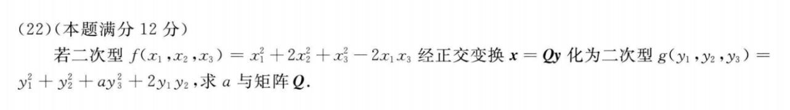
- 最好是写一下题目所作过程x=Qy xxx, 又相似又合同的
- 利用相似的必要条件求参数
三大基本型-相似
-
- 利用相似的必要条件求参数
- n阶矩阵的相似关系(相似矩阵))
- 第二题没啥
三大基本型-合同20数二
利用正交变换辅助矩阵拆解
这个模拟题和21年真题)差不多
-
- 第一第二题常规
- 第三题就是左右乘以Q和Q转, 向要证明的靠拢, 然后用一下正定的性质开方的到一个U^TU(跟21年思路一样)
二次转换的分解问题(二次坐标变换矩阵)
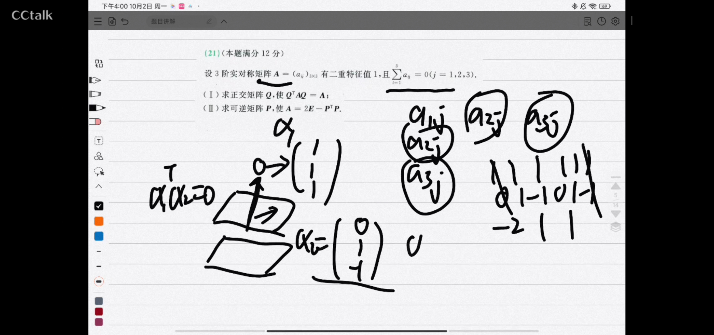
- 题目信息是各行元素和为常数和实对称矩阵
- 又考到实对称矩阵不告知全部特征向量
- 第二题实际上考察的依然是正定矩阵(A-2E特征值都大于0)与E相似
- 第一题提供的Q矩阵可以把A-2E弄成对角矩阵, 此时只要配方法的换元就可得到E, 验证得到这个系数矩阵是可逆的
- 这样就找到了Q和另一个矩阵依次作为坐标变换矩阵之后调整成题目要的即可.
AB=0
-
- 这题如标题, 就是有AB=0
- 这题如果会推导r(A) + r(B) <= n, 就可以通过推导过程的得到题目信息
- 对B进行分块, 就能找到特征值的信息
- 然后就可以求出A了(用特制定义)
补充
矩阵分解汇总(重点)
9.25总结一下
- 矩阵分解的核心在于线性表示
- 注意有隐蔽的线性表示就是本身: $A\alpha$线性表示$A\alpha$(系数为1, 其他为0)
矩阵分解的一个重要目的是为了凑$AP=PB$, 特殊的有$AP=P\Lambda$(当P为n个线性无关的特征向量组成)
- 也可以说是构造矩阵乘法凑相似
- 通常A会乘进P来方便凑B这个系数矩阵
我在很多地方都零散地总结了矩阵分解
-
- 此题极好, 非常难看出来线性表示, 所以必须要矩阵分解+构造相似
- 更多题可见xiehou特征值和特征向量的那一部分
下面两个相似题型重要地考察了这个知识点
做题时候如何更好利用秩
- 3b1b里矩阵的秩: Number of dimensions in the output or The number of dimnesions in the column space
- 所以 讨论向量组的秩的时候, 我们可以把向量表示为列向量, 然后横着组成向量组
常见的条件挖掘
- TODO: 自己整理李正元和其他一些题的题干, 收集总结所有可能的题干挖掘, 常翻
- 考研线代中一些常见的条件挖掘【考前必看】【今年很可能考】
- 给了$f(A) = 0$等价告知了特征秩只能取什么, 常和对角矩阵的秩一起考
- r(A)非满秩, 则必定有|A| = 0, 则必有特征值0(|A|等于特征值乘积)
矩阵等价、列等价、列向量组等价有什么关系
TODO: 超级易混淆知识点——矩阵等价、列等价、列向量组等价有什么关系
列满秩所有性质汇总
TODO: 列满秩能推出什么？列满秩所有性质汇总【考研线代高频考点】【考前必看】
等价、合同、相似三者关联和判别方法
AB=C能推出什么
TODO: AB=C能推出什么，一个视频搞定
AB=O的分块DFS路线
- 这里蕴含的分块思想在任何题目都有用, 尤其是非方阵矩阵基本就是必须要分列向量, 单独取讨论每个列向量
- 只要记住四种排列组合就可以现场推出以下的结论了.
A不变B列分块
A元素B行分块
A列分块B元素

A行分块B列分块
结论
- AX = 0(0向量), B的列向量是该方程组的解
TODO: AB=O能推出什么，一个视频搞定
汇总
模拟卷每日三题
- 跟着xt
day1
- 23年森哥五套卷
-
- T8
- 特值法, k = 0, 马上AD就错
- 法一, 几何意义
- $\beta_1 在A张成的空间中$
- $\beta_2 不在A张成的空间中$
- 画个$R^3$的平面, 然后取xoy平面, $\beta_1在平面$, $\beta_1不在$
- 直接看出只要有$\beta_2$这个分量在, 就一定无解
- 法二 秩
- 首先清楚, 有解的意思是$r(A, ?) = r(A)$, ?是一个没有作用的列向量, 因为可以被A的列向量线性表示(?在A张成的空间中)
- 拼接看秩: $r(A, k\beta_1 + \beta_2$, A列分块, 因为有解, 所以列向量可以干掉$k\beta_1$
- T9
- 法一 线性映射
- 对B和C进行列分块, 所以意思是B的每个列向量经过映射, 最后得到的每个列向量都是有效的, 张成的空间维度是s
- 因为A无法升维, 所以B的列向量本身就是线性无关的, 张成的空间的维度一定也是s
- 法一 线性映射
- T10
- 送分的
- T8
day2
23年森哥五套卷
- 1
- 比较常规, 看到4x3会慌一下
- 就表示成A对各个向量得到最终的向量, 然后叠加原理可以快速写出
- 2
- 押中了23真题666
- YY是用广义初等变换写的
- 就正常写就行了, 见分块矩阵的伴随矩阵
- 3
- 这只有一个合同, 没别的了
- 合同不不一定
- 合同只不改变形状, 正负不改变, 特征值可能会变
- $D^TP^TAPD$(D是交换行的初等矩阵), 做完变换不清楚是否一样
- D是否相同pq就看是否做可逆变换得到合同, 所以checkC
- 相当于右乘以了三个倍加的初等矩阵
- 显然可逆
- 1
day3
23年森哥五套卷
- 1
- 第一题非常综合, 是好题
- A两个矩阵的秩相加都还是小于n…
- 说明都不满秩, 行列式都等于0, 都有0特征值
- B竖着拼, 最极端的情况就是加和, 但是题目告知就算加和了也小于n, 所以
- 注意是看列满秩, 因为x作为系数将左边矩阵进行列的线性组合, 所以看的是列满秩
- 具体点, 可以给n为3, 那么A秩1, B秩1显然拼了也是不满秩的
- C pass
- D 经典不等式, 要牢记推导过程(lzy3.44, 3.45)
- 这里也要想的起来用
- 2
- 可逆矩阵相似成了对角化只有一种可能就是用特征向量组成P, 所以得到特征对角矩阵
- A^*可快速得到664
- 所以问题变成了, Q必须是特征特征向量
- D看出来是不同特征值线性组合成的特征向量, 这就很g了…
- 同一特征值的特征向量的非零线性组合仍是同一特征值的特征向量(xiehou)(真题)(真题))
- 同时也是20真题的考法
- 3
- 非方阵问题
- A: $r(AA^T) = r(A) = n$, 满秩
- B: x看作系数, 因为AA^T列满秩, 能组成任何R^n中的向量且唯一表示, 所以有唯一解
- C: 我的解法是要想得到mxm , x必须要nxm, 显然不可能
- xt的解法是: r(A) = n, r(A|E) = m, n < m显然不可能有解(低维无法表示高维)
- 1
day4
- 23年李4(一)
- 第一套不难, 5分钟写完三题选择
- T1
- 用一下A*的定义, 然后就好了, 行列式正常求就好了
- T2
- 这个直接就是经典结论秒选B
- 复习下方程组同解问题(解空间相等, X_1和X_2列向量组等价))
- 同解就是解空间相同
- T3
- 又讨论相似又讨论合同, 又是具体型
- 最好最省脑子就是求特征值, 很快得出C是对的
day5
- 23年李4(三)
- 第三套T8卡了会儿910不难, 7分钟写完三题选择
- T8
- 伴随秩的经典结论
- 主要是A的操作$A^*b = 0$, 然后把题干带入就推出来了, 得想到这一点
- T9
- 这个本意应该不那么好写, 但是这个可以直接写出具体型, 所以变得简单
- T10
- 目标其实就是求A^*的特征值, A又是E和秩一矩阵, 快速得出特征值, 然后就秒了
- 正规地写就是得到A相似对角矩阵后左右取伴随, 正交矩阵行列式为正负1
day6
- 23年李4(四)
- 都是熟悉的内容, 5分钟以内
- T8
- 这个几何去做比较显然
- T9
- 秩一矩阵可以得到可逆转
- 那就拆成一坨P1P2…Pn右乘
- 所以是列等价
- T10
- 这里冗余信息很多f(A)可以不要
- 这里Ar(4), A*也r(4), p1, 正交变换肯定是特征值, 所以必定是三正1负
day7
- 23年张8
- 比较有意思, 都不是常见的知识点感觉
- T1
- 大概用特征值好解
- A实对称肯定能对角化, 正交最终没用到
- 此时特征值能不加的本质是看特征向量是否相同
- 验证可以加, 就简单了
- T2
- 这题能把A求出来的
- 那后面就简单了, 这里也不用完全求伴随, 就求A11-33即可…
- 真求伴随用快速求即可, 也就慢个几秒
- T3
- 经典
- 左乘列满zhi矩阵zhi不变
- 2很快很能找出个反例(E 少一行), 乘完还是线性无关
day8
- 23年张8
- 比较新, 但是也都还是正常的知识点
- T1
- 见秩的等式与不等式(YY xiehou))
- 这里xt给了非常好的新的证明, 大开眼界
- 放缩夹逼
- T2
- 每行都相同直接算
- 或者分析展开我们需要的次数
- 都差不多
- T3
- 刚开始没用特征值, 感觉非常蛋疼, 想用秩的不等式夹逼, 貌似是不行的
- 然后只能特征值
- 2对应俩线性无关特征向量, -1对应一个
- 感觉就答案这种解法比较严谨
day9
- 23张8
- 今天好像常规些
- T1是实对称矩阵不同特征值向量正交
- T2YY有
- T3是经典的结论, 以及秩零定理
day10
- 23张8
- T1比较常规, 就是经典的行列式性质, 细心即可
- T2
- 注意是非对称, 所以要弄一下变为对称的
- 求pq一坨方法, 最快就是合同快速求pq
- 选择题可以用行列式分析下, 行列式是负数, 所以只能2正一负, 3负, 又因为迹为正数, 所以只能是2正1负
- T3
- 特值法无敌
- 直接让A为对角线为2 1的矩阵, 然后正常求即可
day11
- 22张8过关
- T1主要考察通解不能本身就是零向量
- 非常好的题, 这个真题好像是考过, 复习了波
- 比如可以表示成$k\alpha_1$的话, 要确保$\alpha_1$不是零向量, 而是由k任意来得到零向量这个解
- 所以这里C: $k(\alpha_1 + \alpha_2)$当$\alpha_1 = -\alpha_2$的时候会让向量为0, 直接就是零向量(题目只说两个解不相等)
- 而D无例, 因为两个必须相等才能构造出零向量.
- T2
- 为0就可以马上得到A
- T3
- 各列元素之和
- 弄一个全1的2阶A特值法得到特征值为2, 0
- 下面是正常分析
- A和其转置矩阵的特征多项式是相同的, 所以特征值是相同的
- 所以可以得到A的特征值为2, 0(|A| = 0, 一定有特征值0)
- 答案是9, 1
- T1主要考察通解不能本身就是零向量
day12
- 22张8过关
- 感觉22张8怎么这么好
- T1
- 这个要条件反射出可以拼起来
- 然后终点要想想特征值
- 所以这题围绕特征值做是第一个尝试方向
- 通过加和减得到特征值1, -1
- 又因为Ax=0有非零解, 说明一定有特征值0将一些特征向量压缩成0(几何角度理解)
- 也可以|A| = 特征值积, 所以肯定有0
- 所以特征值1, -1, 0
- T2
- 正交变换化为标准型, 系数就是特征值
- 法一就直接迹就可以得到了
- 二次型矩阵可以写成一个经典可拆矩阵, 拆为秩一矩阵和aE矩阵
- 得到特征值a+4 = 5, a = 1
- T3
- 矩阵分解终于来了
- 还有伴随行列式的平方
day13
22张8过关
- T1
- 非常有意思, 凑个完全平方后就看出考什么了
- tr和行列式很快得出
- T2
- 要养成习惯check是否是实对称矩阵
- 卡了一会儿, 还行, 思考线性组合即可
- 最正规的方法就是还原到$xB^TABx$, 得到$(Bx)^TA(Bx)$, 所以Bx等于0只有零解(x不取0, Bx就不可能为0)
- T3
- 常规题, 画图特殊很快可以得到
- T3
- 常规题, 画图特殊很快可以得到
- T1
day14
22张8过关
- T1
- 就是秩一矩阵和秩, 简单题
T2
- 这题超好
- 如果熟悉正交矩阵的性质, 其中有一个就是1和-1, 我记得很清楚
- f(A) = 0, 得到特征值只能是1和-1
- 但是这并不是充分必要条件, 所以DFS失败
移项拆出特征值(其实就是f(A) = 0的推导过程)
- 这样确保了有n个线性无关的特征向量
- T3
- lzy6.10, 也是经典结论, 相似了特征值一样当然也合同
- 只能求特征值, 其余都不行(想取巧不行)
- T1
day15
22张8过关
- 三题向量专题
- T1
- 久wei的矩阵分解(要么用秩)
- 一下没想起来居然用定义在做…
- T2
- 和T1一个考法, 这在一张试卷不对劲啊
- T3
- 思考了下非方阵的秩零定理
- 发现结论是成立的
- 所以跟方阵一样做即可
- 找出通解(1个), 找出一个特解即可
day16
22张8过关
- T1
- 比较简单
- 齐通+特
- 叠加原理即可
- T2
- f(A)=0得到特征值, |A|可以直接限死特征值, 规范型可以直接看pq
- T3
- 这题没做出来, 太神奇了, 就先看出要求的是一个类似求特征值的
- 然后循环证明每个向量的特征值, 发现都是6, 循环的, 然后6有三个线性无关的特征向量
- 所以秩为3-3=0
- T1
day17
21张4
- T1
- 比较抽象, 只有是B可以排除, 看讲解
- T2
- 配方法, 否则那个特征行列式非常难算
- T3
- 这个经典, 就是同一特征值张成的特征平面是不是仍然是特征向量
- 这个用几何很好解
- 这个经典, 就是同一特征值张成的特征平面是不是仍然是特征向量
- T1
day18
21张4
- T1
- 平方和结论), 不错, 我直接从头到尾自己推了下
- T2
- 求个秩, 其实可以看出来, 看cu
- T3
- 代数余子式
- 注意这题四阶用不了快速求伴随
- 法二就是分块矩阵求
- T1
day19
22李6
- T1几何很快出
- T2代数余子式展开
- T3
- 有经典的可以知道特征值是倒数关系, 特征向量是相同的(lzy特征值那里有推论)
day20
22李6
- T1
- D很有意思, nxn x nxs 得到nxs, 如果A变换后的向量刚好都没被压缩进零点也是线性无关的
- T2
- 哈密顿凯莱定理
- 用特征值写也可以, 然后三个对角矩阵相乘, 比较简单, 最后为0矩阵
- T3
- 这题不能像xt那样删去来排除
- 只能是从条件来出发
- 定义来出发, 因为k2没说非0, 所以不能当分母, 而其他两个非0, 所以一定能当分母, 所以可以得到向量1和3都被其他两个线性表示, 画下图说明三个向量共面甚至1和3可以重叠
- T1
day21
23李永乐6
- T1
- 有意思的题, 卡了蛮久的
- 最后只能试试选项, A的特征值是-3 7 7然后去右乘选项试试, B是对的
- T2
- 这题非常好
- 基础解析线性无关, 各自又正交
- Ax=0两个基础解析, 基础解析解向量个数 = n - r(A), 所以r(A)为2, 所以A的行向量线性无关
- 汇总信息可以得到A的行向量和基础解系向量相互正交
- T3
- 正定, 定义出发(看xt)
- 或者直接是矩阵相似与E, 所以满之, r(AA^T) = r(A) = 3, 行列式工具一下
- T1
day22
23李永乐6
- T1
- 这题主要是C看能不能找出一个小于的, 显然是可以的
- T2
- 定义出发, 两个矩阵加一下即可
- 不从定义出发反而会做得麻烦
- T3
- 秩一矩阵特征值得到, 又为单位矩阵
- T1
day23
23李永乐6
-
- T1
- 排除法无敌, 如果凑的话挺费神的
- T2
- 常规辅导书题
- T3
- 乘一下, 左右两个是转置, 但不互逆, 所以合同但不相似
- T1
day24
合工大超越1
- T1
- 实对称矩阵可以相似对角化
- r(A+bE)=1, 说明对角有俩是0
- 又因为|A|, 所以可以确定对角线是a/b^2, -b, -b
- 所以B
- T2
- 好题
- 乍一看非常麻烦
- 仔细观察以后A的第三列可以被一二列干掉
- r(A) = 2, 要线性表示B的第二列只能用A的第二列(第一行和第三行的分量同比例), 所以k直接得到-2
- T3
- 简单题, C是实对称的
- T1
day25
合工大超越2
- T1
- 就几何去解就好了, r(A) = 3 = n - 1, r(A*) = 1
- T2
- 没挖掘出信息…
- 看了解答其实感觉好像脑子里闪过这个方式, 其实是复习早期比较常见的手法
- 用其他行当作系数展开的代数余子式得到的行列式是0
- T3
- 1这种不是公式的基本都是错的, 2是对的
- 3要特征向量相同才能做这样的推导
- 4lzy里有直接是秒选, 用定义可以很快推导
- T1

day26
合工大超越3
- T1
- 刚真题做过, lyf上有, 直接C, 其他选项很莫名其妙
- T2
- 一个相关就好了, 这题不是特别清楚
- T3
- 这个有看过正经的线代书都能知道这是考矩阵的高次幂(用相似对角化利用上对角矩阵)
- T1
day27
合工大超越4
- T1
- 秩一矩阵必定是0…0
- 然后YY结论4有一个条件就是tr(A)为0的情况, 这时候不能对角化
- 所以至少是2重(可能全是0)
- T2
- 用特征值作为切入角度比较好
- 所以特征值要么全大于1要么全小于1, AB直接错(二阶伴随是主对掉, 副变号, 刚好和A对偶)
- D A就可以满秩, 这样特征值可以是对角元素(实对称矩阵, 一定可以对角化, 这里可以相似又合同为对角矩阵)
- 充分: 开方A一定是满秩的, 得到D
- 必要: A相似又合同成的对角矩阵平方了肯定大于0
- T3
- 先经典结论得到伴随矩阵的秩
- 这样其中一个是可逆的, 乘了以后不会改变另一个秩, 这样可以得到1
- T1
day28
23李永乐5
- T1
- 基本法就是狂算(基本公式)
- 特殊法就是取一个对角矩阵
- T2
- 用行列式和tr去试探
- 可以得到2正1负
- 合同正负惯性指数不变, 特征值不变号
- 所以分别看选项特征值为2正1负即可
- 用下秩1矩阵
- C
- T3
- 用特征值做桥梁
- A求到-1, 2, 5(这里可以拆成A+aE来更快地算特征值)
- 这里A是实对称矩阵, B和A相似, 所以B也相似于同一个对角矩阵
- 所以这里r(B+E) = 2(秩零定理), r(B-2E) = 2
- 所以这里r(B+E) = 2(秩零定理), r(B-2E) = 2
- T1
模拟卷强调
正交矩阵转置等于伴随
- 余5-1T8
A^TA
- A是mxn(方阵就更好了)
- 首先A^TA和AA^T是实对称矩阵
- 其次A^TA(AA^T)负惯性指数为0, 如果r(A) = n
模拟卷
李正元15
24余5
24合工大
第一套
- 8
- 考察的公式, 一步步操作即可
- 9
- 可逆实对称, 那满秩又是方阵
- 需要知道可逆的性质, 平方的特征值是大于0的, 那么p = r(?), 复习了用pq个数来check 是否合同后, 存在可逆矩阵的不常见的角度
- 又考了相似(4的答案没用相似做, 感觉不太好)
- 16
- 比较轻松的check二重特征值秩来看能否对角化的题
- 10
- 复习了全平方和的结论
- 22(极好的线代题, 值得反复琢磨)
- 非常lzy的一题
- 1的证明是3.33, 3.34以及3.36的矩阵分解结合的一题, 以及:线性相关性下(YY)
- 2要能看出AP=P?, 这样就得到了相似关系,
- 然后check三重特征值的秩零定理即可
- 3极其好, 抽象的通解, 就是挖掘题目信息找到满足等式的即为找到的解
- 这里满足Ax=0的解就是A^TAx=0的解得到齐次通解
- 同理得到非齐次特解, 得到齐次通解
- 非常巧妙, 虽然不可能这么考, 但是作为练习真的非常好
第二套
- 8
- 抽象矩阵秩的题
- 看答案即可, 差不多是这么写的, 主要是条件挖掘要正确
- 9
- 具体矩阵的秩的问题
- 需要注意 具体矩阵不要忘记子式的check, 可以快速定秩的下界
- 上界通常可以用行列式
- 10
- 少见的0向量
- 这样确定了A的秩
- A可以对角化, 那么可对角化为特征对角矩阵, 特征值1个非0
- 16
- 用求和符号让life easier
- 关键点就在于要挖掘出三个都是f(A) = 0的根, 这样才能做出来, 之前很少见
- 然后还需要仔细看答案关于判非0向量的操作, 这里是矩阵的列向量都是解的常见操作
- 22
- 都是经典的信息挖掘
- 第三题用上第二题进行线性变化后就好求了
李林6
第一套
- 8
- 这里用二阶子式才会比较简单, 否则参数太多很难处理
- 用来测分可以, 感觉锻炼程度不行
- 9
- 用来测分可以, 感觉锻炼程度不行
- 实对称矩阵: 代数重数等于几何重数
- 实对称矩阵不同特征值的特征向量相互正交
- 用下叉乘, 很快乐
- 10
- 用来测分可以, 感觉锻炼程度不行
- A对称, B不对称需要check代重和几何重关系, 发现可以
- 然后两个矩阵特征值也一样, 那就相似了(对角矩阵过渡)
- 选项考察相似合同正定什么的
- 实对称矩阵合同后仍然是实对称矩阵, AB绝对不会合同
- 也就是说只有两个都是实对称矩阵, 相似才合同
- 16
- 基本公式, 多dfs尝试, 应该怎么样都可以算出来的, 细心即可
- 22
- 这题看一下第二小题就是要用到正交变换, 所以即使第一题可以用配方法也直接用正交变换了
- 需要注意的是, 当要求最值的时候, 只能做正交变换, 因为正交变换不会对图像进行拉伸, $x^Tx$转化为$y^Ty$的值不会变
- 更代数地讲就是换了xy轴
- 正交变换才能满足不改变函数的数值